Bölüm 1
Kurulum ve ilk açılış
Dünyatek Kuyumcu Portalı, Windows bilgisayarınıza kurulan ve internet olmadan çalışan bir kuyumcu takip programıdır. Kayıtlarınız yalnızca kendi bilgisayarınızda saklanır.
Programı kurma
- Size verilen Dunyatek_Kuyumcu_Portal_Kurulum_1.1.6.exe dosyasına çift tıklayın. Windows “Bu uygulamanın cihazınızda değişiklik yapmasına izin vermek istiyor musunuz?” diye sorarsa Evet’i seçin.
- “Dünyatek Kuyumcu Portalı kurulumuna hoş geldiniz” sayfasında İleri’ye tıklayın.
- Kurulum klasörü olarak C:\Dunyatek_Kuyumcu_Portal önerilir. Bu klasörü değiştirmeden Kur’a tıklayın.
- Kurulum bitince “Kurulum tamamlandı” sayfası açılır. Programı şimdi aç işaretliyse Bitir’e bastığınızda program açılır.
Kurulum; masaüstüne ve Başlat menüsüne logolu Dunyatek_Kuyumcu_Portal simgesini koyar. Başlat menüsündeki program klasöründe ayrıca Yedek klasörü ve Kaldır kısayolları bulunur.
Program nasıl çalışır?
Masaüstündeki simgeye tıkladığınızda program arka planda kendi küçük sunucusunu başlatır ve portalı Microsoft Edge’de ayrı bir pencere olarak açar (Edge bulunamazsa varsayılan tarayıcınızda açılır). Pencerenin adresi http://localhost:47800 olur. Bu adres yalnızca o bilgisayardan açılabilir; başka bir bilgisayardan veya telefondan erişilemez.
| Ne | Nerede |
|---|---|
| Program | C:\Dunyatek_Kuyumcu_Portal |
| Kayıtlarınız | C:\Dunyatek_Kuyumcu_Portal\Veri (veritabanı dosyası: kuyumcu.sqlite) |
| Yedekler | C:\DUNYATEK_BACKUP |
| Adres | http://localhost:47800 (yalnızca bu bilgisayar) |
Yeni sürüme güncelleme ve kaldırma
- Güncelleme: Yeni sürümün kurulum dosyasını aynı şekilde çalıştırın. Program eskisinin üzerine kurulur; kurulum çalışan programı kendisi kapatır. Kayıtlarınız ve yedekleriniz silinmez.
- Kaldırma: Başlat menüsündeki Kaldır kısayolunu veya Windows’un uygulamalar listesini kullanın. Kaldırma işlemi Veri ve C:\DUNYATEK_BACKUP klasörlerini silmez; programı yeniden kurduğunuzda kaldığınız yerden devam edersiniz.
İlk açılış: yönetici hesabını oluşturma
Program ilk kez açıldığında Yönetici hesabı oluştur ekranı gelir. Bu hesap programın sahibidir; diğer kullanıcıları daha sonra bu hesapla eklersiniz.
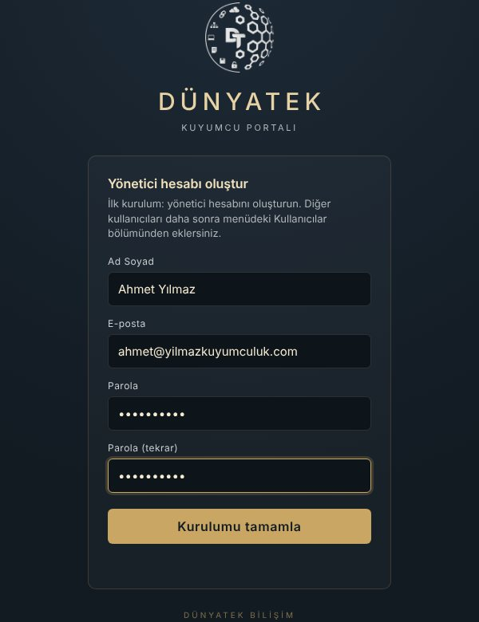
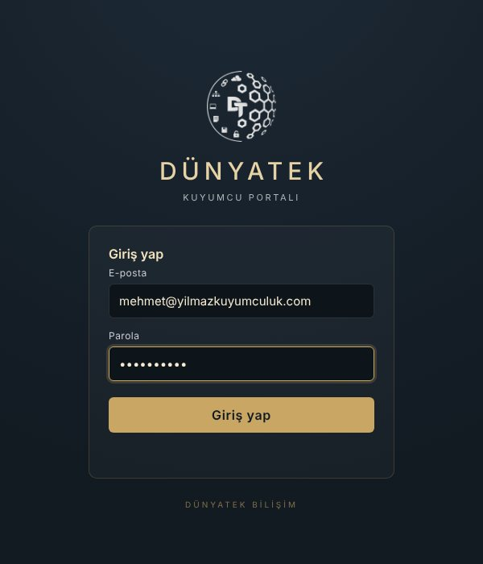
- Ad Soyad ve E-posta alanlarını doldurun. E-posta adresi giriş yaparken kullanıcı adınız olur.
- Parola ve Parola (tekrar) alanlarına aynı parolayı yazın. Parola en az 8 karakter olmalıdır.
- Kurulumu tamamla’ya tıklayın. Program açılır ve Dashboard ekranı gelir.
Yönetici e-postasını ve parolasını güvenli bir yere not edin. Personel parolasını unutursa yönetici Kullanıcılar listesindeki Parola düğmesiyle yeni parola belirler; yönetici parolasını unutursanız giriş ekranındaki Parolamı unuttum bağlantısını kullanın (Bölüm 20’deki “Parolamı unuttum” sorusu).
Deneme süresi ve lisans
Program ilk açıldığı günden itibaren 15 gün deneme olarak çalışır; üst çubukta kalan gün sayısı görünür. Devam etmek için bilgisayarınıza özel bir lisans anahtarı girmeniz gerekir.
- Sağ üstteki dişli menüden LİSANS’a tıklayın (deneme sırasında üst çubuktaki Deneme: … gün kaldı yazısına da tıklayabilirsiniz).
- Pencerede yazan makine kodunu Kopyala ile kopyalayıp Dünyatek Bilişim’e iletin.
- Size gönderilen ve DT1- ile başlayan lisans anahtarını Lisans anahtarı kutusuna yapıştırın ve Etkinleştir’e tıklayın.
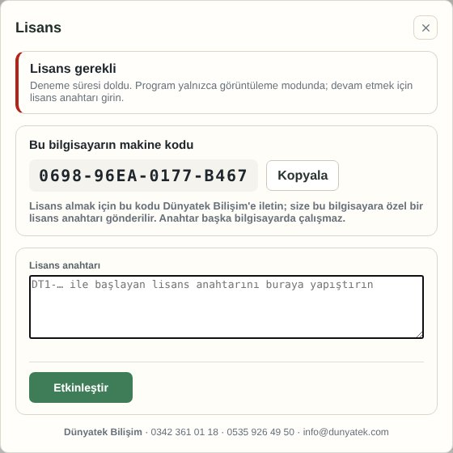
- Lisans anahtarı yalnızca makine kodu verilen bilgisayarda çalışır. Programı başka bilgisayara kurarsanız veya Windows’u yeniden kurarsanız yeni makine kodu için yeni anahtar alın.
- Deneme veya lisans süresi bitince program kilitlenmez ve verileriniz silinmez: kayıtları görebilir, yedek alabilirsiniz; yeni kayıt girmek için lisans anahtarı gerekir.
Bölüm 2
Ekrana genel bakış
Program açıldığında solda menü, üstte fiyat ve ayar çubuğu, ortada seçtiğiniz ekran bulunur.
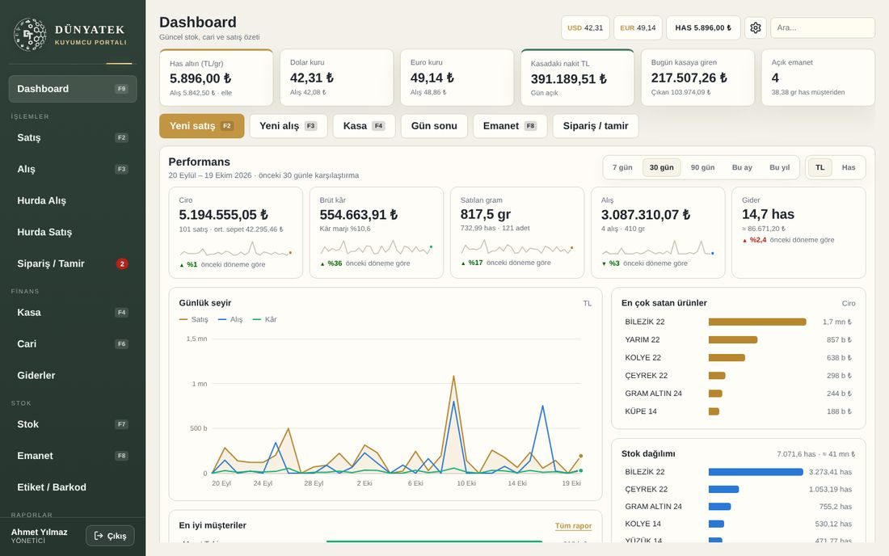
Sol menü
| Grup | Ekranlar |
|---|---|
| — | Dashboard F9 |
| İşlemler | Satış F2, Alış F3, Hurda Alış, Hurda Satış, Gümüş / Bakır, Döviz Al / Sat, Sipariş / Tamir, Atölye |
| Finans | Kasa F4, Cari F6, Giderler |
| Stok | Stok F7, Emanet F8, Etiket / Barkod, Stok Sayımı |
| Raporlar | Raporlar |
Menünün altında oturum açan kişinin adı ve rolü (Yönetici, Personel veya İzleyici) ile Çıkış düğmesi yer alır. Sipariş / Tamir satırında kırmızı bir sayı görürseniz teslim günü bugün, yarın olan veya geçmiş iş var demektir.
Üst çubuk
- USD / EUR kutuları: günün dolar ve euro satış kuru.
- HAS düğmesi: günün has altın fiyatı (TL/gr). Tıklayınca fiyat penceresi açılır (Bölüm 3).
- TV düğmesi: dükkândaki TV veya ikinci ekran için fiyat panosunu ayrı pencerede açar (Bölüm 3).
- Dişli (⚙) menü: ayarlar, yedekler, firma bilgileri, kısayollar, hesap ve çıkış.
- Ara… kutusu: açık ekrandaki tabloyu yazdığınız kelimeye göre süzer (örneğin müşteri adı, ürün cinsi). / tuşu imleci doğrudan bu kutuya götürür.
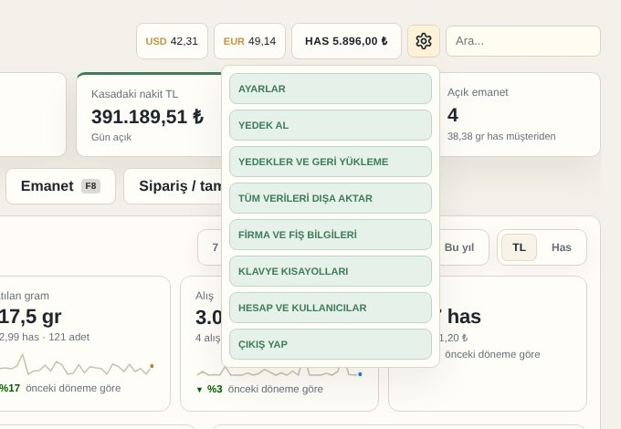
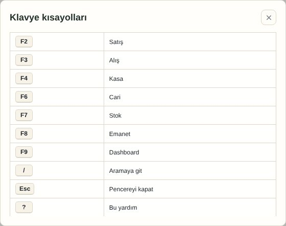
| Menü öğesi | Ne işe yarar |
|---|---|
| AYARLAR | Açık/koyu görünüm, otomatik yedekleme sıklığı, sürüm bilgisi; yöneticide ayrıca “Verileri sıfırla”. |
| YEDEK AL | O anın yedeğini hemen alır (Bölüm 17). |
| YEDEKLER VE GERİ YÜKLEME | Yedek listesi ve geri yükleme penceresi. |
| TÜM VERİLERİ DIŞA AKTAR | Tüm kayıtları okunabilir bir JSON dosyası olarak indirir. |
| FİRMA, LOGO VE FİŞ BİLGİLERİ | İşyeri adı ve logosu, fişlerde görünen adres, telefon, vergi bilgisi ve fiş alt notu (Bölüm 3). |
| FİYAT PANOSU (TV) AYARLARI | TV panosunda görünecek ürünler, fiyatların nereden geleceği ve kayan yazı (Bölüm 3). |
| KLAVYE KISAYOLLARI | Kısayol listesini gösterir (? tuşu da açar). |
| HESAP VE KULLANICILAR | Parola değiştirme; yöneticide kullanıcı ekleme ve yetki verme. |
| ÇIKIŞ YAP | Oturumu kapatır. |
Klavye kısayolları
| Tuş | Görev |
|---|---|
| F2 | Satış ekranı |
| F3 | Alış ekranı |
| F4 | Kasa ekranı |
| F6 | Cari ekranı |
| F7 | Stok ekranı |
| F8 | Emanet ekranı |
| F9 | Dashboard |
| / | Arama kutusuna git |
| Esc | Açık pencereyi kapat |
| ? | Kısayol yardımını aç |
F tuşları bir pencere (ör. ödeme penceresi) açıkken çalışmaz; önce Esc ile pencereyi kapatın.
Açık ve koyu tema
Sol üstteki Dünyatek logosuna tıkladığınızda ekran koyu temaya, bir daha tıkladığınızda açık temaya geçer. Aynı seçim Ayarlar penceresindeki Görünüm alanından da yapılabilir. Tema yalnızca renkleri değiştirir; doldurduğunuz form ve kayıtlar etkilenmez.
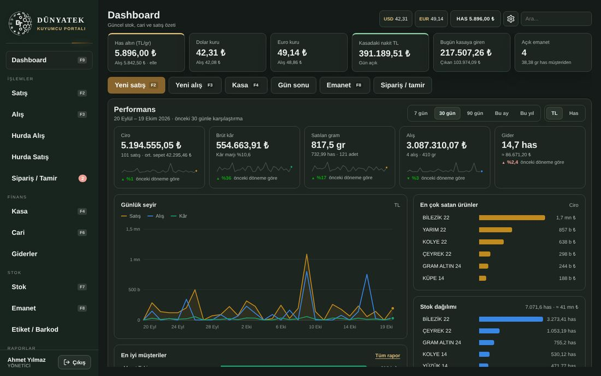
Her ekranda ortak olanlar
- Tarihler: her ekranda gün.ay.yıl (gg.aa.yyyy) biçimindedir, ör.
21.10.2026. Tarih kutusuna yalnızca rakamları yazmanız yeterli:21102026yazınca noktalar kendiliğinden gelir. Kutunun sağındaki takvim simgesi kutunun hemen altında Türkçe bir takvim açar (Bugün düğmesi bugünü seçer); imleç kutudayken ↑ / ↓ tuşları tarihi bir gün ileri veya geri alır. - Sayı yazma: ondalık için virgül kullanın (ör.
18,42). Eksi işaretli değer girilemez. - Kaydetme onayı: Satış, alış ve hurda kayıtlarında Kaydet’e bastıktan sonra “Bu kaydı kaydetmek istiyor musunuz” sorusu gelir; Kaydet ile onaylayın.
- Tablo düğmeleri: her satırda yazıcı (fiş/makbuz), kalem (düzenle) ve çöp kutusu (sil) simgeleri bulunur. Silme işlemi her zaman onay ister.
- CSV: tablo başlığının yanındaki CSV düğmesi tabloyu Excel’de açılabilen bir dosya olarak indirir.
- Notlar: tablodaki kısaltılmış nota tıklayınca notun tamamı açılır.
- İsimler büyük harfle kaydedilir: müşteri, tedarikçi, cari, atölye ve emanet sahibinin adını nasıl yazarsanız yazın (ör.
ayşe yılmaz) program onu Türkçe kurallarla büyük harfe çevirir (AYŞE YILMAZ; i → İ, ı → I). Böylece aynı kişi cari ekstrede ve raporlarda tek ve düzgün bir isimle görünür. Daha önce girilmiş isimler de güncellemeden sonraki ilk açılışta bir kez büyük harfe çevrilir.
Bölüm 3
Has fiyatı, döviz kurları ve TV fiyat panosu
Has fiyatı, 1 gram has (saf) altının TL değeridir. Program satış, alış ve hurda formlarına bu fiyatı öneri olarak yazar.
- Bilgisayar internete bağlıysa program has fiyatını ve USD/EUR kurlarını canlı kaynaktan okur; ekrandaki fiyat 5 saniyede bir yenilenir. Program önce kuyumcuların takip ettiği Harem Altın’ın canlı fiyat akışına bağlanır; bağlantı koparsa veya 2 dakika fiyat gelmezse kendiliğinden Truncgil Finans’a geçer, Harem yeniden gelince ona döner. İsteğe bağlı olarak yönetici, HAS düğmesiyle açılan pencerenin altındaki Canlı fiyat kaynağı bölümüne altinapi.com’dan aldığı API anahtarını yazıp Anahtarı kaydet’e basar; anahtar okunamazsa program yine Truncgil’e döner. Fiyatın hangi kaynaktan geldiğini görmek için fareyi üst çubuktaki HAS düğmesinin üzerine getirin.
- İnternet yoksa veya canlı fiyat okunamazsa sizin elle girdiğiniz fiyat kullanılır. Dashboard’daki “Has altın” kutusunda fiyatın yanında canlı veya elle yazar.
- Üst çubukta görünen HAS … ₺, USD ve EUR rakamları satış fiyatıdır. Fareyi üzerine getirdiğinizde alış ve satış birlikte görünür; Dashboard kutularında büyük rakam satış, altındaki küçük yazı alıştır.
- Fiyat yalnızca öneridir: yeni satışta satış, yeni alış ve hurda alışta alış fiyatı forma gelir; her kayıtta fiyatı değiştirebilirsiniz. Kayıt, sizin formda bıraktığınız fiyatla saklanır.
Dashboard’daki “Stok Değeri (güncel)” kutusu, kalan has stoğunu günün alış fiyatıyla çarparak hesaplar. Fiyat girilmemişse bu kutu boş kalır.
Has fiyatını elle girme
- Üst çubuktaki HAS düğmesine tıklayın (fiyat hiç girilmemişse düğmede HAS FİYATI GİR yazar).
- Alış (TL/gr has) ve Satış (TL/gr has) alanlarına günün fiyatlarını yazın.
- İsterseniz USD ve EUR için alış ve satış kurlarını da girin. Kurlar döviz kasası işlemlerinde öneri olarak kullanılır.
- Elle fiyatı kaydet’e tıklayın.
Yanlış bir fiyat girdiyseniz veya yeniden canlı fiyatla çalışmak istiyorsanız aynı pencerede Canlı fiyata dön’e tıklayın: elle girilen has fiyatı ve kurlar silinir, alanlara canlı fiyat gelir. Elle fiyat girilmemişse düğme alanları yalnızca güncel canlı fiyatla yeniler.
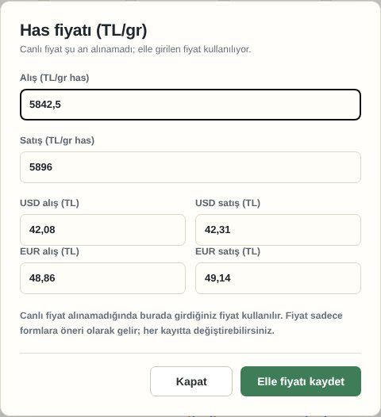
TV fiyat panosu
Dükkândaki TV’de veya ikinci bir monitörde müşterilere günün alış ve satış fiyatlarını gösterebilirsiniz. Panoda işyerinizin logosu ve adı, saat ve tarih, altın, bilezik ve ayarlar, sarrafiye, gümüş, dolar ve euro bulunur. Fiyatlar 5 saniyede bir kendiliğinden yenilenir; değişen fiyatın yanında yükseldiyse yeşil ▲, düştüyse kırmızı ▼ görünür.
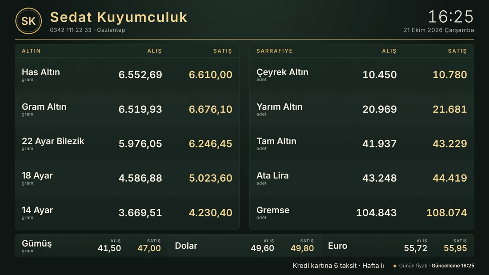
- TV’yi veya ikinci ekranı bilgisayara bağlayın (Windows’ta Win + P → Genişlet).
- Üst çubukta, dişli simgesinin yanındaki TV düğmesine basın. Pano ayrı bir pencerede açılır.
- Pencereyi fareyle TV ekranına sürükleyin ve üstteki Tam ekran düğmesine basın (veya F tuşu). Fare 3 saniye kıpırdamazsa düğmeler ve imleç gizlenir.
- Programı kullanmaya ana pencereden devam edin; pano açık kalır. Kapatmak için panonun üstündeki Kapat’a basın.
Panodaki fiyatları ayarlama
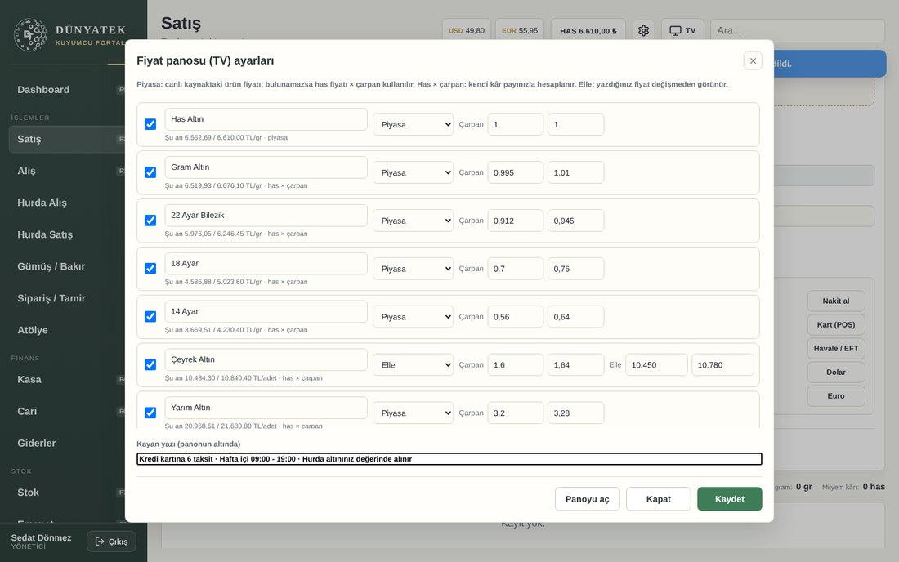
Dişli menüden FİYAT PANOSU (TV) AYARLARI’nı açın. Her satırda şunları seçersiniz:
| Ayar | Ne işe yarar |
|---|---|
| Kutucuk | Satır panoda görünsün mü. İşaretini kaldırdığınız ürün panodan çıkar. |
| Ad | Panoda yazan ad (ör. “Çeyrek Altın” yerine “Çeyrek”). |
| Piyasa | Fiyat canlı piyasadan gelir. Piyasada o ürünün fiyatı bulunamazsa has fiyatı × çarpan kullanılır. |
| Has × çarpan | Fiyat, günün has fiyatının çarpan katıdır; kendi kâr payınızı böyle verirsiniz. Çarpan, 1 gramın veya 1 adetin kaç gram has ettiğidir (alış / satış). Örnek: has 6.552,69 / 6.610 TL, çeyrek çarpanı 1,600 / 1,640 → çeyrek 10.484 / 10.840 TL. |
| Elle | Yazdığınız alış ve satış fiyatı olduğu gibi görünür, piyasa değişse de değişmez. Binlik ayraç için nokta yazabilirsiniz (10.450). |
| Kayan yazı | Panonun altında kayan duyuru (ör. taksit seçenekleri, çalışma saatleri). |
Her satırın altındaki “Şu an …” yazısı, o satırın panoda göründüğü fiyatı ve nereden geldiğini gösterir. Gümüş fiyatı Gümüş / Bakır ekranındaki fiyattan, dolar ve euro üst çubuktaki kurlardan gelir. Ayarları yalnızca yönetici değiştirebilir; açık pano birkaç saniye içinde yeni ayarla yenilenir.
İşyeri adı ve logosu
Panoda ve fişlerde görünen işyeri adı ile panodaki logo, dişli menüdeki FİRMA, LOGO VE FİŞ BİLGİLERİ penceresinden girilir. Logo seç ile PNG veya JPG logonuzu seçin; logo kendiliğinden küçültülüp kaydedilir. Logoyu kaldır logoyu siler. Saydam arka planlı PNG logo koyu panoda en iyi görünür.
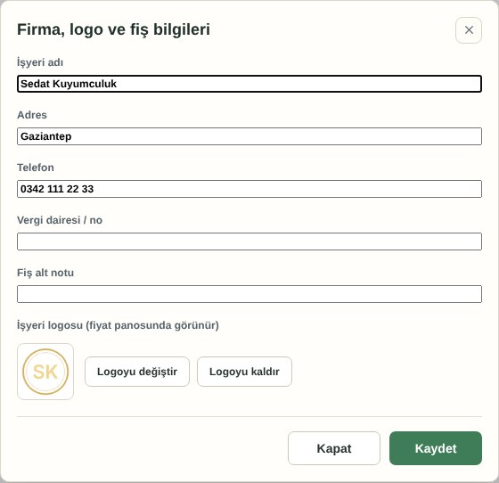
- Pano yalnızca fiyat gösterir; müşteri programın içini, kasayı veya kayıtları göremez.
- Canlı fiyat gelmezse panoda elle girdiğiniz has fiyatından hesaplanan fiyatlar görünür ve alt köşede “Günün fiyatı” yazar; canlıyken “Canlı piyasa” yazar.
Bölüm 4
Satış ve fiş
Satış ekranı (F2) stoktaki ürünleri satmak, ödemeyi kasaya işlemek ve müşteriye fiş vermek için kullanılır.
Temel hesaplar
Örneğin 18,42 gram 22 ayar bileziği 940 milyemden satarsanız has 17,31 gr olur. Program satışın kârını iki şekilde gösterir: TL kârı (tutar − stoktan düşen alış maliyeti) ve milyem kârı (gram × satış ile alış milyemi farkı ÷ 1000, has cinsinden).
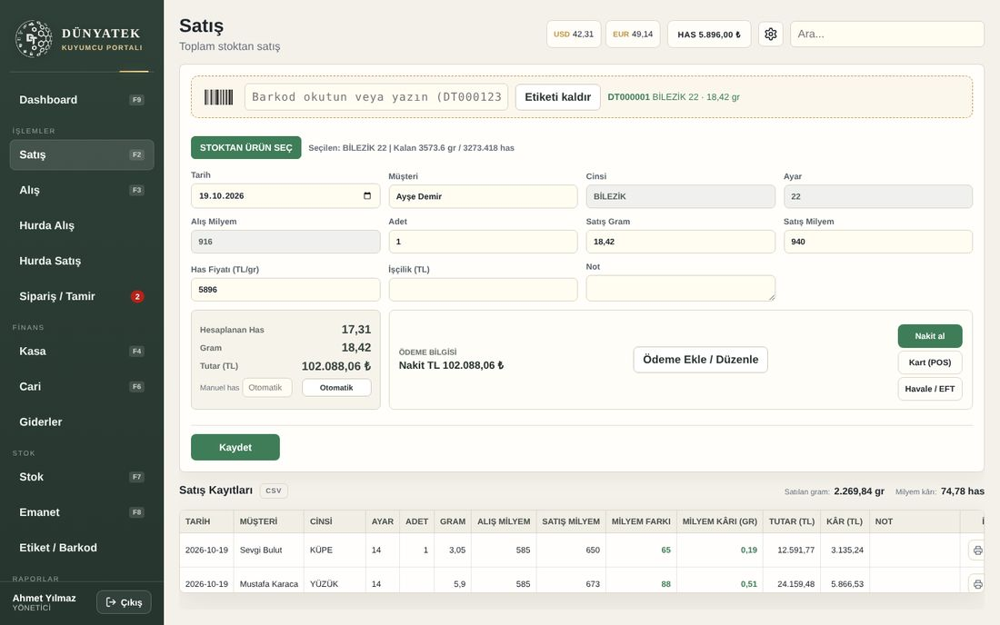
Satış yapma
- Ürünü seçin. Etiketli bir parça satıyorsanız barkod okuyucuyla formun üstündeki Barkod okutun veya yazın kutusuna okutun (veya barkodu yazıp Enter’a basın). Cinsi, ayar, gram ve taş bilgisi kendiliğinden dolar. Etiketsiz satışta STOKTAN ÜRÜN SEÇ’e tıklayıp listeden cinsi ve ayarı seçin.
- Müşteri alanına adı yazın. Kayıtlı cariler yazdıkça listelenir; listeden seçebilirsiniz.
- Sarrafiyede Adet, diğer ürünlerde Satış Gram alanını girin. Alış Milyem stoktan otomatik gelir.
- Satış Milyem’i yazın. Gerekirse Has Fiyatı ve İşçilik (TL) alanlarını düzeltin. Alttaki kutuda Hesaplanan Has, Gram ve Tutar (TL) anında görünür.
- Ödemeyi seçin: tamamı tek yerden alınacaksa Nakit al, Kart (POS) veya Havale / EFT düğmesine bir kez tıklayın. Bölünmüş veya dövizli ödeme için Ödeme Ekle / Düzenle’yi kullanın (aşağıda).
- Kaydet’e basın ve onay sorusunu Kaydet ile onaylayın. Satış, tablonun en üstüne eklenir.
Nakit al, Kart (POS) ve Havale / EFT düğmeleri işlem tutarının tamamını ilgili kasa hesabına yazar ve müşterinin has borcunu kapatır. Gram veya fiyatı sonradan değiştirirseniz ödeme tutarı da kendiliğinden güncellenir.
Bölünmüş ve dövizli ödeme
Ödeme Bilgisi kutusunun yanındaki Dolar veya Euro düğmesine tıklayın. Program işlemin TL tutarını günün kuruyla dövize çevirir (müşteri döviz veriyorsa alış, siz döviz ödüyorsanız satış kuru) ve tutarı Nakit Dolar / Nakit Euro kasasına işler; özette kur da yazar. Alış ekranında aynı düğmeler müşteriye döviz ödemek içindir. Kuru değiştirmek veya ödemeyi TL ve döviz olarak bölmek için Ödeme Ekle / Düzenle’yi kullanın.
Ödeme Ekle / Düzenle penceresinde beş seçenek vardır:
| Seçenek | Ne zaman kullanılır |
|---|---|
| Ödeme Yok | Müşteri şimdi ödemiyor; tutarın hası müşterinin cari borcuna yazılır. |
| Has ile Ödeme | Müşteri borcunun bir kısmını has olarak ödüyor. |
| Gram + Milyem | Müşteri ödemeyi altınla yapıyor; gram ve milyem girilir, has kendiliğinden hesaplanır. |
| Borcu Tam Kapat | İşlemin tamamı ödendi (para kasaya işlenmeden). |
| Nakit / Kart / Havale | Para birden çok hesaba veya dövizle alınıyor. Her satıra hesap ve tutar yazılır; dövizli hesapta kur da girilir. |
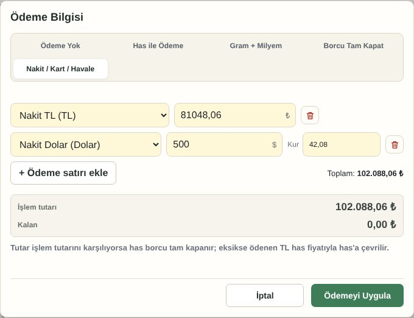
Girilen para işlem tutarını karşılıyorsa borç tam kapanır. Eksikse, ödenen TL has fiyatıyla has’a çevrilir ve kalan has müşterinin cari hesabına borç olarak yazılır. Pencerede İşlem tutarı ve Kalan değerleri görünür. Ödemeyi Uygula ile pencereyi kapatın.
Manuel has
Hesaplanan has kutusundaki Manuel has alanına has miktarını doğrudan yazabilirsiniz; program bu durumda milyemi has ÷ gram × 1000 olarak ayarlar. Otomatik düğmesi önceki milyeme ve otomatik hesaba geri döner.
Kayıtları düzeltme ve silme
Formun altındaki Satış Kayıtları tablosunda kalem simgesi kaydı forma geri getirir; değişiklikten sonra Güncelle’ye basın. Çöp kutusu kaydı siler. Kayda bağlı kasa hareketleri kayıtla birlikte düzenlenir ve silinir. Tablonun üstünde seçili kayıtların Satılan gram ve Milyem kârı toplamları görünür.
- Satış, aynı cins ve ayardaki toplam stoktan yapılır; stok yeterli değilse kayıt yapılmaz. Program en eski alıştan başlayarak düşer (FIFO).
- Barkodlu satışta etiket “Satıldı” olur; aynı etiket ikinci kez satılamaz. Satış silinirse etiket yeniden “Stokta” olur.
Fiş yazdırma
Tablodaki yazıcı simgesine tıklayın; 80 mm termal yazıcıya uygun bir Satış Fişi yazdırma penceresi açılır. Fişin üstündeki firma adı, adres, telefon ve vergi bilgisi ile alttaki teşekkür notu dişli menüdeki FİRMA, LOGO VE FİŞ BİLGİLERİ penceresinden girilir (yalnızca yönetici değiştirebilir).
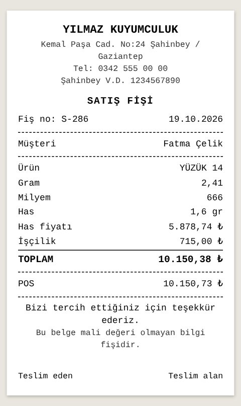
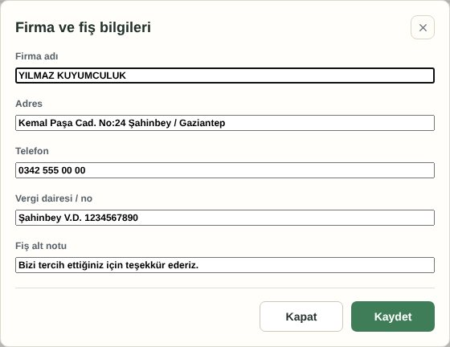
Fişin altında “Bu belge mali değeri olmayan bilgi fişidir.” yazar; resmi fatura veya yazar kasa fişi yerine geçmez.
Bölüm 5
Alış
Alış ekranı (F3) toptancıdan veya müşteriden alınan ürünleri stoğa ekler.
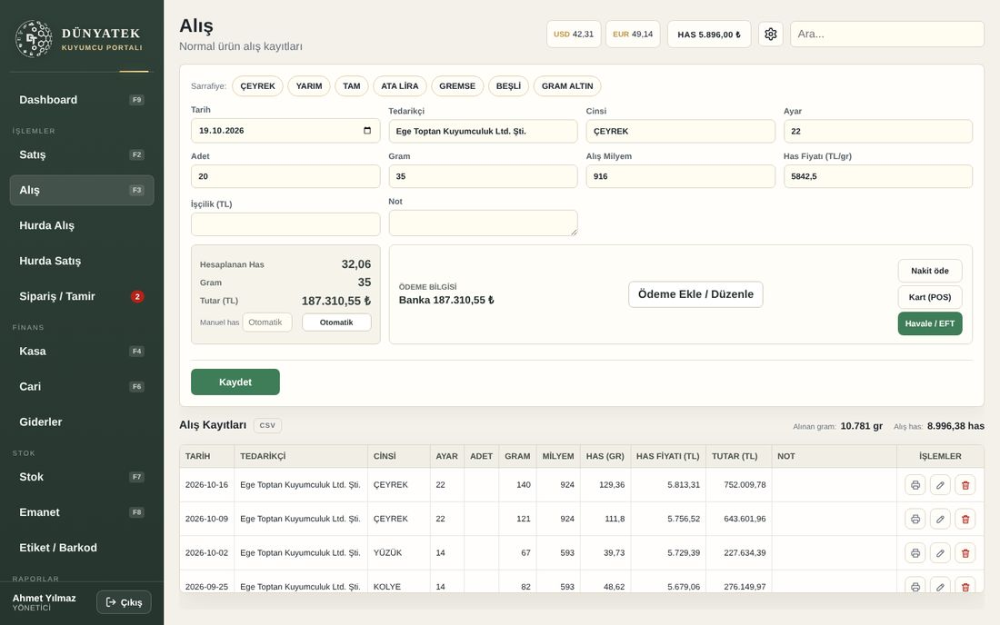
- Tedarikçi alanına toptancının veya satıcının adını yazın.
- Sarrafiye alıyorsanız formun üstündeki ÇEYREK, YARIM, TAM, ATA LİRA, GREMSE, BEŞLİ veya GRAM ALTIN düğmesine tıklayın: cinsi, ayar ve milyem dolar; Adet yazınca gram kendiliğinden hesaplanır. Has Fiyatı, tutar TV panosundaki adet fiyatına (alışta alış, satışta satış) eşit çıkacak şekilde dolar; alanın altında kullanılan adet fiyatı yazar. BEŞLİ için piyasa fiyatı olmadığından has fiyatı kullanılır. Diğer ürünlerde Cinsi, Ayar ve Gram’ı yazın.
- Alış Milyem’i girin, Has Fiyatı ve İşçilik (TL)’i kontrol edin.
- Ödemeyi seçin: Nakit öde, Kart (POS), Havale / EFT veya Ödeme Ekle / Düzenle. Hiç ödeme seçmezseniz alışın hası tedarikçiye borç olarak cariye yazılır.
- Kaydet’e basıp onaylayın. Ürün stokta görünür.
| Sarrafiye | Gram (1 adet) | Ayar / milyem |
|---|---|---|
| Çeyrek | 1,75 | 22 / 916 |
| Yarım | 3,5 | 22 / 916 |
| Tam | 7 | 22 / 916 |
| Ata Lira | 7,216 | 22 / 916 |
| Gremse | 17,5 | 22 / 916 |
| Beşli | 36,08 | 22 / 916 |
| Gram altın | 1 | 24 / 995 |
Alış makbuzu yazdırmak için Alış Kayıtları tablosundaki yazıcı simgesini kullanın.
Bölüm 6
Hurda alış ve hurda satış
Müşteriden alınan bozuk veya kullanılmış altınlar normal stoktan ayrı, hurda stoğunda izlenir.
Hurda alış
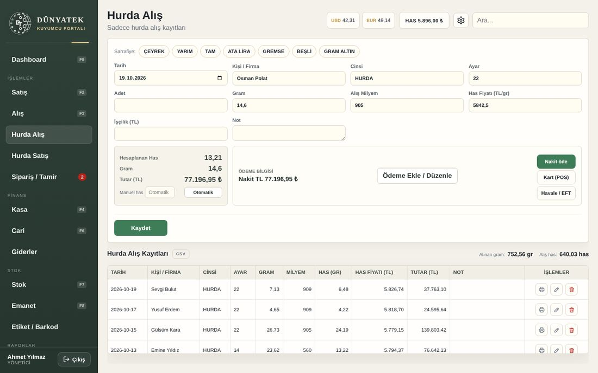
- Menüden Hurda Alış’ı açın. Cinsi alanında “HURDA” hazır gelir.
- Kişi / Firma, Ayar, Gram ve ölçtüğünüz Alış Milyem’i girin.
- Has fiyatını kontrol edin, ödemeyi seçin (çoğunlukla Nakit öde) ve Kaydet’e basın.
Hurda satış
Biriken hurdayı rafineriye veya toptancıya satarken Hurda Satış ekranını kullanın. HURDA STOKTAN SEÇ ile ayarı seçin, gramı ve satış milyemini yazın, ödemeyi seçip kaydedin. Kayıtlar tablosunda her satışın milyem farkı, milyem kârı ve TL kârı görünür.
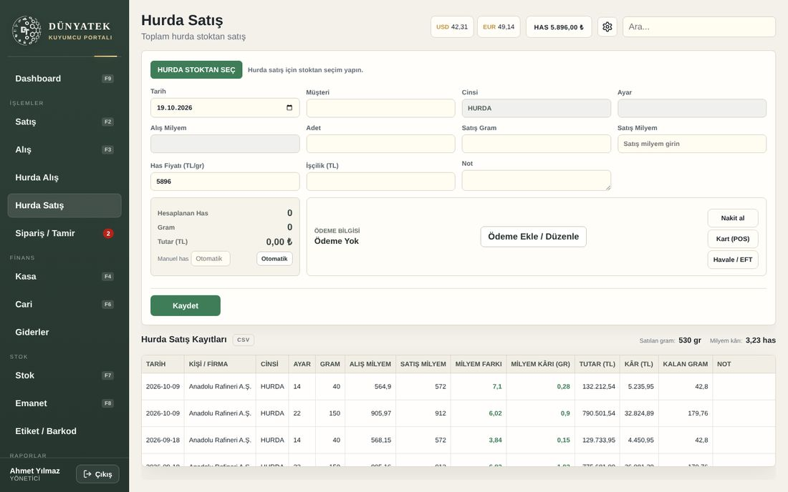
Bölüm 7
Gümüş ve bakır
Gümüş takı, külçe ve hurda ile hurda bakır alım satımı altından ayrı, Gümüş / Bakır ekranında tutulur. Stok saf gram üzerinden izlenir; altın stoğu, has hesabı ve altın carisi bu kayıtlardan etkilenmez.
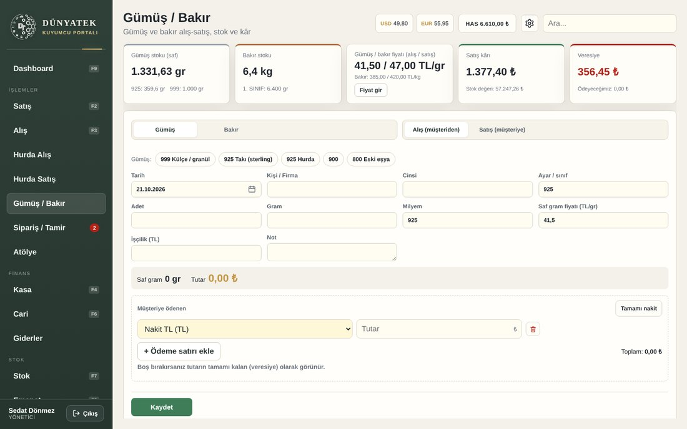
Piyasada nasıl alınıp satılır
- Gümüş gram fiyatıyla alınıp satılır. Fiyat 1 gram saf (999) gümüşün fiyatıdır. 925 ayar (sterling) bir parçada her gramın 0,925’i saf gümüştür; program saf gramı kendiliğinden hesaplar.
- Gümüş takı satışında gram değerinin üzerine işçilik eklenir. Hurda ve külçe alışında işçilik olmaz.
- Bakır kilo fiyatıyla ve sınıfına göre alınır: 1. sınıf (parlak, temiz tel), 2. sınıf (kirli veya kaplamalı), eşya. Gramı yazarsınız, tutar kilo fiyatından hesaplanır.
Gümüş ve bakır fiyatını girme
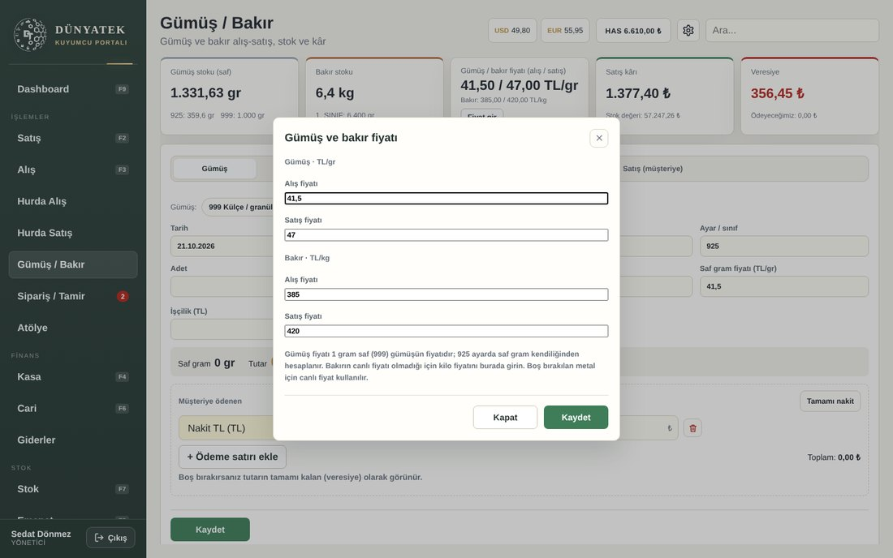
Fiyat kutusundaki Fiyat gir düğmesine tıklayın, gümüşün gram, bakırın kilo alış ve satış fiyatını yazıp Kaydet’e basın. İnternet varsa gümüşün canlı fiyatı da okunur; ancak elle girdiğiniz fiyat her zaman önce gelir. Bir metalin kutularını boş bırakırsanız o metal için canlı fiyat kullanılır. Bakırın canlı fiyatı yoktur, kilo fiyatını siz girersiniz.
Alış veya satış kaydı
- Menüden Gümüş / Bakır’ı açın. Formun üstünden metali (Gümüş veya Bakır) ve işlemi (Alış (müşteriden) veya Satış (müşteriye)) seçin.
- Hazır düğmelerden birine tıklayın: gümüşte 999 Külçe / granül, 925 Takı (sterling), 925 Hurda, 900, 800 Eski eşya; bakırda 1. sınıf (parlak tel), 2. sınıf, Eşya / takı. Ayar, milyem ve cinsi kendiliğinden dolar.
- Kişi / Firma ve Gram’ı yazın. Fiyat, girdiğiniz günün fiyatıyla gelir; gerekirse değiştirin. Takı satışında İşçilik (TL)’ı girin.
- Saf gram ve Tutar formun altında anında görünür.
- Ödeme bölümünde hesabı ve tutarı girin; hepsi nakitse Tamamı nakit’e basın. Ödemeyi boş bırakırsanız tutarın tamamı kalan (veresiye) olarak kalır.
- Kaydet’e basın.
| Hesap | Formül |
|---|---|
| Saf gram | Gram × milyem ÷ 1000 |
| Gümüş tutarı | Saf gram × gram fiyatı + işçilik |
| Bakır tutarı | Gram ÷ 1000 × kilo fiyatı + işçilik |
| Örnek | 420 gr 925 hurda gümüş: 420 × 925 ÷ 1000 = 388,5 saf gr; 388,5 × 41,50 TL = 16.122,75 TL |
Stok, kâr ve veresiye
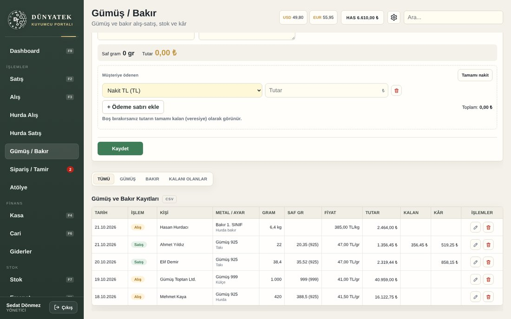
- Üst kutular: saf gümüş stoğu (ayarlara göre dağılımıyla), bakır stoğu, günün fiyatı, satış kârı ile stok değeri ve veresiye (müşterilerin bize borcu ve bizim ödeyeceğimiz).
- Stoktan fazla satılamaz: elinizdeki saf gümüş veya bakırdan fazlasını satmak isterseniz program uyarır; önce alış kaydını girin.
- Sekmeler: TÜMÜ, GÜMÜŞ, BAKIR ve ödemesi tamamlanmamış kayıtlar için KALANI OLANLAR.
- Kasa: ödemeler kasaya “Gümüş / Bakır” kaynağıyla kendiliğinden yazılır. Kaydı düzeltince kasa da düzelir; kaydı silerseniz kasa satırı da silinir.
Alış ve hurda ekranlarından kısayol
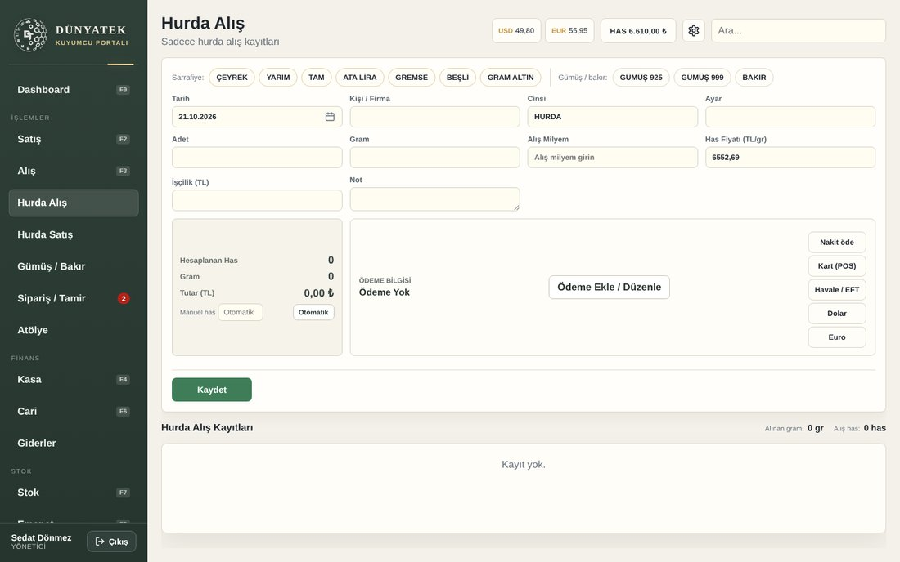
Alış, Hurda Alış ve Hurda Satış ekranlarında altın sarrafiye düğmelerinin yanında, aynı sırada GÜMÜŞ 925, GÜMÜŞ 999 ve BAKIR düğmeleri bulunur. Müşteri altın yerine gümüş veya bakır getirdiyse bu düğmeye basın; Gümüş / Bakır ekranı o metal ve ayar seçili olarak açılır.
- Gümüşte has carisi yoktur. Gümüş veresiyesi TL olarak, kaydın Kalan sütununda izlenir. Müşteri sonradan öderse kaydı kalem simgesiyle açıp ödemeyi ekleyin.
- Kâr ortalama maliyetle hesaplanır. Satılan gümüşün maliyeti, eldeki stoğun ortalama alış fiyatıdır (altındaki gibi ilk giren ilk çıkar değildir). Gümüşte tutarlar küçük olduğundan fark önemsizdir.
- Canlı gümüş fiyatı her zaman gelmeyebilir. Günün gümüş fiyatını sabahları kontrol edin, gelmediyse Fiyat gir ile elle yazın.
Bölüm 8
Sipariş ve tamir
Müşterinin sipariş ettiği ürünleri ve tamire bıraktığı parçaları teslim gününe kadar takip edin; kaporayı kasaya işleyin, müşteriye numaralı fiş verin.
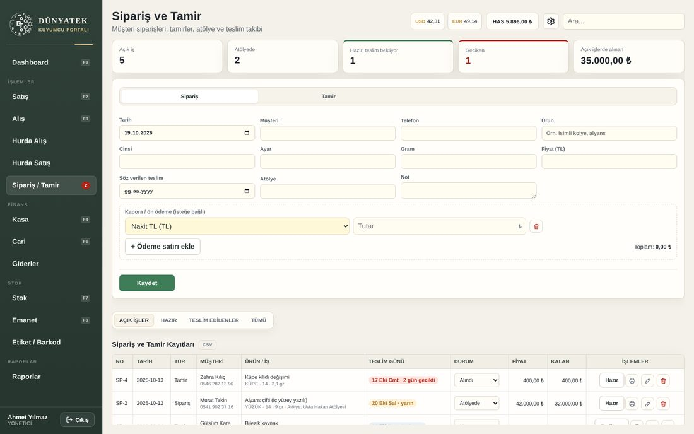
Yeni sipariş veya tamir kaydı
- Formun üstünden Sipariş veya Tamir’i seçin.
- Müşteri ve Telefon’u yazın (cari kartında telefon kayıtlıysa kendiliğinden gelir).
- Ürün (tamirde Yapılacak tamir) alanına işi tarif edin; gerekirse cinsi, ayar ve gramı girin.
- Fiyat (TL)’ı ve Söz verilen teslim gününü girin. İşi verdiğiniz atölye belliyse Atölye’yi yazın.
- Kapora alındıysa Kapora / ön ödeme bölümünde hesabı (Nakit TL, POS, Banka, döviz) ve tutarı girin.
- Kaydet’e basın. “Müşteriye fiş yazdırılsın mı” sorusuna Yazdır derseniz SP-numaralı sipariş veya tamir fişi çıkar.
Durum takibi
Her iş Alındı → Atölyede → Hazır → Teslim edildi sırasıyla ilerler; gerekirse İptal seçilebilir. Durumu tablodaki açılır listeden veya satırdaki Hazır / Teslim et düğmesinden değiştirin.
- Atölyede: Atölye ekranı bu sipariş bağlı olarak açılır; atölyeyi, verilen gram ve milyemi girip işi atölyeye verin (Bölüm 9). İş atölyedeyken sipariş tablosunda atölye adı ve işin aşaması görünür; iş atölyeden alınınca sipariş kendiliğinden “Hazır” olur.
- Teslim et: teslim günü, fiyat, kapora ve kalan tutar görünür; teslimde alınan parayı hesap seçerek girin. Ürün stoktan çıktıysa ayrıca Satış ekranından satış kaydı girin.
- Teslim günü sütunu: “yarın”, “bugün” veya “2 gün gecikti” gibi uyarılar renkli gösterilir; geciken işler kırmızıdır.
Üstteki kutular açık iş, atölyedeki iş, teslim bekleyen hazır iş, geciken iş sayısını ve açık işlerde alınan kaporayı gösterir. Alttaki sekmelerle AÇIK İŞLER, HAZIR, TESLİM EDİLENLER ve TÜMÜ arasında geçiş yapılır.
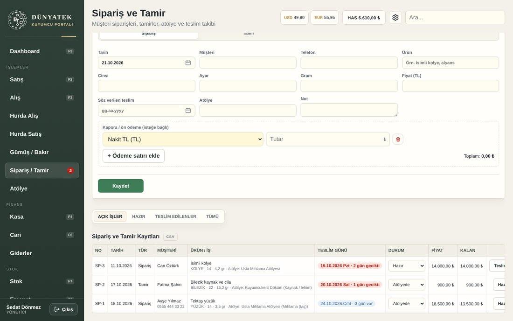
Bir sipariş kaydını silerseniz ona bağlı kapora ve teslim ödemeleri de kasadan silinir.
Bölüm 9
Atölye takibi
İmalat veya tamir için atölyeye verdiğiniz her işi tek ekranda izleyin: hangi atölyede, hangi aşamada, ne kadar has verildi, ne kadar geri geldi ve fire ne oldu.
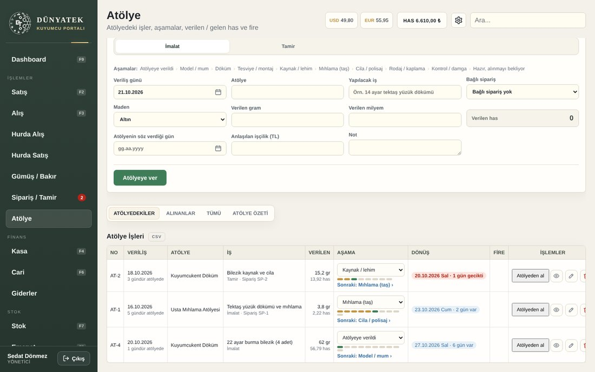
Atölyeye iş verme
- Menüden Atölye’yi açın ve formun üstünden İmalat veya Tamir’i seçin.
- Veriliş günü, Atölye ve Yapılacak iş’i yazın.
- İş bir müşteri siparişi içinse Bağlı sipariş listesinden siparişi seçin. Sipariş kendiliğinden “Atölyede” olur.
- Maden’i (altın veya gümüş), atölyeye verdiğiniz Verilen gram ve Verilen milyem’i girin. Verilen has kendiliğinden hesaplanır.
- Atölyenin söz verdiği gün ve Anlaşılan işçilik (TL)’ı yazın, Atölyeye ver’e basın. İş AT-numarası alır.
Sipariş / Tamir ekranında bir işin durumunu Atölyede yaptığınızda Atölye ekranı o sipariş bağlı olarak açılır; kalan alanları doldurup Atölyeye ver’e basmanız yeterlidir.
Aşamalar
Kuyumcu atölyesinde bir iş genellikle aşağıdaki sırayla ilerler. Tamir işlerinde model ve döküm aşamaları yoktur; işin gerektirmediği aşamaları atlayabilirsiniz.
| Aşama | Ne yapılır |
|---|---|
| Atölyeye verildi | Altın veya parça tartılıp atölyeye teslim edildi. |
| Model / mum | Mum veya bilgisayarla model hazırlanır (yalnız imalat). |
| Döküm | Model alçıya alınıp altın dökülür (yalnız imalat). |
| Tesviye / montaj | Döküm temizlenir, eğe ve zımparayla şekil verilir, parçalar birleştirilir. |
| Kaynak / lehim | Kopuk veya kırık yerler, halka ve kilitler lehimlenir. |
| Mıhlama (taş) | Taşlar yuvalarına oturtulur. |
| Cila / polisaj | Parlatma ve son yüzey işlemi. |
| Rodaj / kaplama | Gerekiyorsa rodyum veya renkli kaplama. |
| Kontrol / damga | Ayar damgası, tartım ve son kontrol. |
| Hazır, alınmayı bekliyor | Atölye işi bitirdi; dükkâna getirilmesi bekleniyor. |
Aşamayı tablodaki Aşama listesinden seçin veya altındaki Sonraki: … bağlantısına tıklayın. Aşama çubuğunda tamamlanan aşamalar dolu görünür. Her değişiklik tarihi ve yapan kullanıcıyla kaydedilir; göz simgesi işin aşama geçmişini açar.
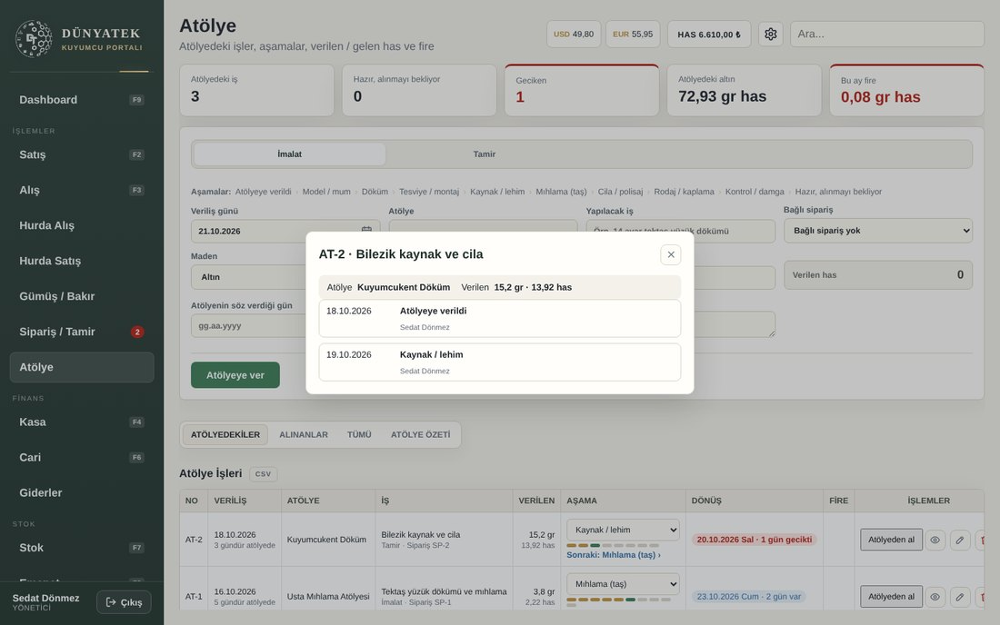
Dönüş sütunu atölyenin söz verdiği günü ve kalan günü gösterir (“2 gün var”). Söz verilen gün geçtiyse satır kırmızı “1 gün gecikti” uyarısı taşır; geciken atölye işleri Dashboard uyarılarında da listelenir.
Atölyeden alma ve fire
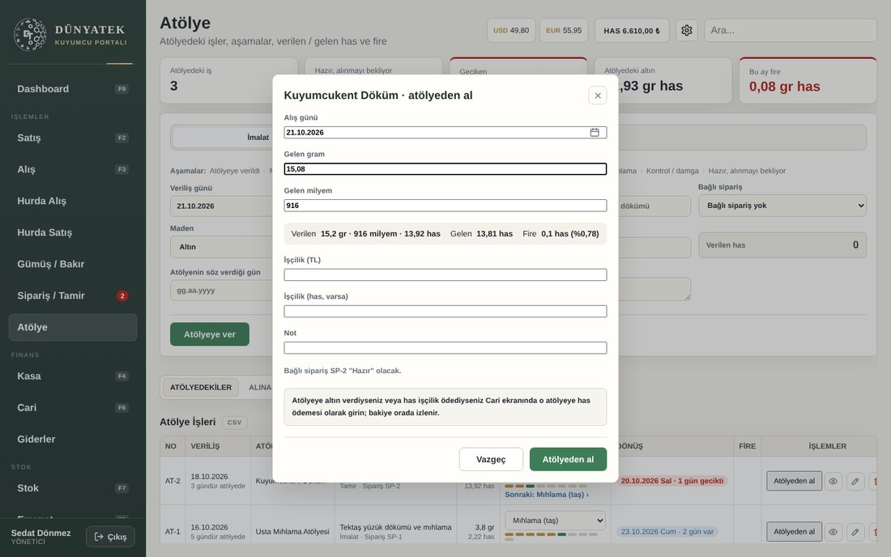
- İş dükkâna geldiğinde satırdaki Atölyeden al’a basın.
- Parçayı tartın; Gelen gram ve Gelen milyem’i girin. Pencerede verilen has, gelen has ve fire anında görünür.
- Ödenecek işçiliği İşçilik (TL)’a, atölye has işçilik alıyorsa İşçilik (has, varsa)’a yazın.
- Atölyeden al’a basın. Bağlı sipariş varsa “Hazır” olur ve müşteriye teslim edilmeyi bekler.
| Hesap | Formül |
|---|---|
| Verilen / gelen has | Gram × milyem ÷ 1000 |
| Fire | Verilen has − gelen has |
| Fire oranı | Fire ÷ verilen has × 100 |
Yanlışlıkla atölyeden alındı olarak işaretlediyseniz ALINANLAR sekmesindeki Geri al ile işi yeniden atölyede yapabilirsiniz; gelen has ve fire silinir.
Atölye özeti
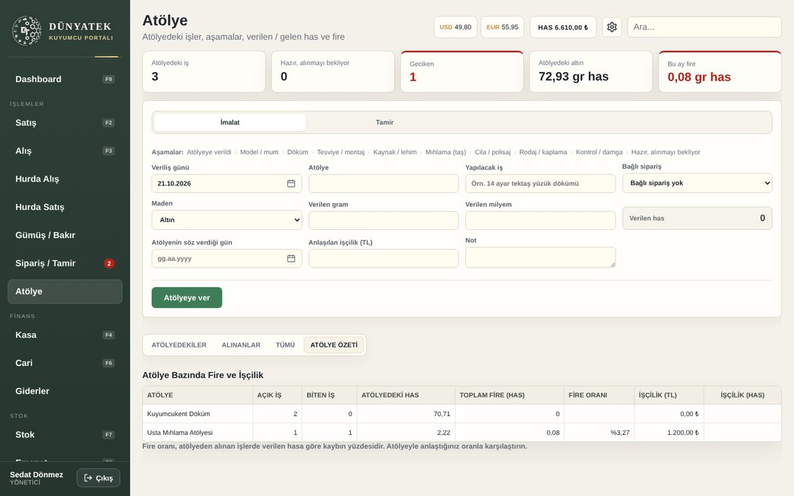
Üstteki kutular atölyedeki iş sayısını, alınmayı bekleyen hazır işleri, geciken işleri, atölyelerdeki toplam altını (has) ve bu ayın firesini gösterir. ATÖLYE ÖZETİ sekmesi her atölyenin fire oranını gösterir; atölyeyle anlaştığınız fire oranıyla karşılaştırarak hangi atölyenin fazla fire verdiğini görebilirsiniz.
- Atölyeye verilen altın stoktan düşülmez. Atölye ekranı işi ve has miktarını takip eder. Atölyeye altın verdiyseniz veya has işçilik ödediyseniz bunu Cari ekranında o atölyeye has ödemesi olarak girin (Bölüm 11); atölyeyle bakiyeniz orada izlenir.
- İşçilik kasaya kendiliğinden yazılmaz. Atölyeye ödediğiniz parayı Cari veya Kasa ekranından girin.
- Bir atölye işini silerseniz aşama geçmişi de silinir; bağlı sipariş ve kasa kayıtları olduğu gibi kalır.
Bölüm 10
Kasa, döviz ve gün sonu
Kasa ekranı (F4) nakit TL, dolar, euro, POS ve banka hesaplarındaki parayı gün gün gösterir.
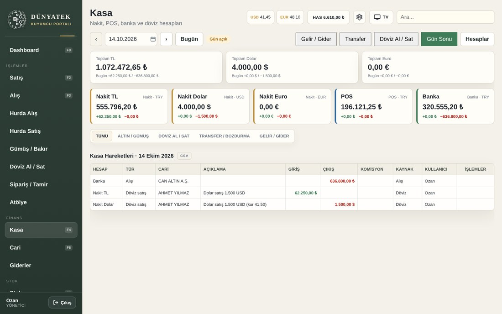
- Program ilk kurulduğunda Nakit TL, Nakit Dolar, Nakit Euro, POS ve Banka hesaplarıyla gelir.
- Bir kayıt TL hesaplarından (Nakit TL, Banka, POS) elinizdekinden fazla para çıkaracaksa program “… eksiye düşecek. Yine de kaydedilsin mi?” diye sorar. Kayıt engellenmez; onaylarsanız yazılır.
- Satış, alış, hurda, gümüş / bakır, cari tahsilat ve sipariş kaporası gibi kayda bağlı hareketler kendiliğinden kasaya yazılır; bunlar ilgili kayıttan düzeltilir veya silinir. Elle girilen hareketler ve transferler çöp kutusu simgesiyle silinebilir.
Kasa yalnızca parayı izler. Has esaslı cari bakiyeleri, stok ve milyem kârı kasadaki hareketlerden etkilenmez.
Kasa ekranını okumak
Kasa ekranının temel mantığı üç cümledir. Her hesap ayrı bir cüzdandır: bakiye, o hesaba giren her şeyden çıkan her şey ve POS komisyonu düşülerek bulunur. Hareketlerin çoğu kendiliğinden yazılır: kasada elle girilen yalnızca gelir / gider, açılış bakiyesi ve transferdir. Aynı para iki kez yazılmaz: bir satışın parası satış kaydına bağlıdır; satış düzeltilir veya silinirse kasa da kendiliğinden düzelir.
Üst çubuk
| Öğe | Ne yapar |
|---|---|
| ‹ ve › | Bir önceki / bir sonraki güne geçer. Günün giriş ve çıkışları ile hareket tablosu o güne göre yenilenir. |
| Tarih kutusu | İstediğiniz günü takvimden seçer. |
| Bugün | Başka bir gündeyken görünür; tek tıkla bugüne döner. |
| Gün açık / Gün sonu alındı | O günün kasası kapatıldı mı? Sarı Gün açık etiketi gün sonu sayımının henüz yapılmadığını gösterir. |
| Gelir / Gider | Bir kayda bağlı olmayan parayı elle girer (fatura, kira, açılış bakiyesi). |
| Transfer | Kendi hesaplarınız arasında para taşır; bankadan döviz çekmek de buradan yapılır. |
| Döviz Al / Sat | Müşteriyle döviz alım satımı için Döviz Al / Sat ekranını açar. |
| Gün Sonu | Akşam kasa sayımı penceresini açar. |
| Hesaplar | Yalnızca yöneticide görünür; hesap ekler, pasif yapar, POS komisyon oranını girer. |
Toplam kutuları ve hesap kartları
En üstteki geniş kutular para birimi toplamlarıdır: Toplam TL, Toplam Dolar, Toplam Euro. Toplam TL, TL cinsinden tüm hesapların (Nakit TL + POS + Banka) toplamıdır. Altındaki Bugün +… / −… satırı seçilen günde o para biriminde giren ve çıkan toplamı gösterir. Bu satır iki TL hesabı arasındaki transferi hem giriş hem çıkış olarak sayar; transferin toplam TL’ye net etkisi sıfırdır.
| Kartın parçası | Anlamı |
|---|---|
| Başlık (Nakit TL, POS, Banka…) | Hesabın adı |
| Sağ üstteki küçük yazı (ör. Nakit · TRY) | Hesabın türü ve para birimi |
| Büyük rakam | Hesabın güncel bakiyesi. Eksiyse kırmızı yazılır. |
| Yeşil +… | Seçilen günde bu hesaba giren |
| Kırmızı −… | Seçilen günde bu hesaptan çıkan |
| Kom. … (yalnız POS) | Seçilen günde bankanın kestiği komisyon |
| Sol kenar rengi | Hesap türü: nakit sarı, POS mavi, banka yeşil |
Geçmiş bir güne gittiğinizde kartlardaki büyük rakam değişmez; her zaman hesabın bugünkü bakiyesidir. Seçtiğiniz günün akşamında kasada ne olması gerektiğini görmek için o günde Gün Sonu’nu açın: Devir + Giriş − Komisyon − Çıkış = Beklenen.
Hareket tablosu
Seçilen günün tüm para hareketleri listelenir. Başlığın yanındaki CSV düğmesi tabloyu Excel’e indirir.
| Sütun | Anlamı |
|---|---|
| Hesap | Paranın girdiği veya çıktığı hesap |
| Tür | Hareketin cinsi: Satış, Alış, Hurda alış, Döviz satış, Transfer, Gider, Devir… |
| Cari | İşlemin kişisi (müşteri, tedarikçi). Transferde boştur. |
| Açıklama | Ne olduğu; döviz hareketinde kur da yazılır |
| Giriş (yeşil) / Çıkış (kırmızı) | Hesaba giren / hesaptan çıkan tutar |
| Komisyon | POS’ta bankanın kestiği tutar. Hesaba geçen = giriş − komisyon. |
| Kaynak | Hareketi hangi ekranın yazdığı: Satış, Alış, Döviz, Transfer, Elle… |
| Kullanıcı | Kaydı giren personel |
| İşlemler | Çöp kutusu: yalnızca elle girilen hareketlerde ve transferlerde çıkar |
Neden bazı satırlarda çöp kutusu yok? Satış, alış veya döviz işleminin parası o kayda bağlıdır. Kasadan tek başına silinseydi kayıt ile kasa birbirini tutmazdı. Bu satırlar kaydın kendi ekranından düzeltilir veya silinir (dövizde iptal edilir); kasa kendiliğinden düzelir. Transferde çöp kutusu iki satırı birlikte siler.
Gelir / Gider (elle hareket)
Fatura, kira gibi kasadan çıkan veya kasaya giren parayı Gelir / Gider düğmesiyle girin. Tür olarak Gelir, Gider, Devir / açılış bakiyesi veya Diğer seçilir; hesap, tutar, isteğe bağlı cari ve açıklama yazılıp Kaydet’e basılır. Programı ilk kullanmaya başladığınızda her hesabın elinizdeki tutarını Devir / açılış bakiyesi olarak girin. Giderler ekranından hesabı seçilerek girilen giderler kasaya kendiliğinden yazılır; onları burada tekrar girmeyin.
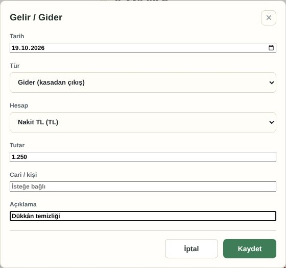
Transfer
Nakitten bankaya yatırılan para veya POS’tan hesaba geçen tutar için Transfer’i kullanın: Çıkış hesabı, Giriş hesabı ve tutarı girin. Çıkış hesabı azalır, giriş hesabı aynı tutarda artar; toplam değişmez. Transfer iki satır yazar (bir çıkış, bir giriş) ve çöp kutusuyla silinince iki satır birlikte silinir.
Bankadan döviz çekmek (bozdurma)
Farklı para birimli hesaplar arasında Giriş hesabına geçen tutar alanı da açılır. Örneğin bankadan 10.000 $ çektiniz ve hesabınızdan 410.000 TL düştü: Çıkış hesabı Banka, Giriş hesabı Nakit Dolar, Tutar 410.000, Giriş hesabına geçen tutar 10.000. Program kuru kendisi hesaplar (410.000 ÷ 10.000 = 41,00) ve bu dolarların maliyeti olarak saklar. Sonraki döviz satışlarının kârı bu maliyete göre hesaplanır.
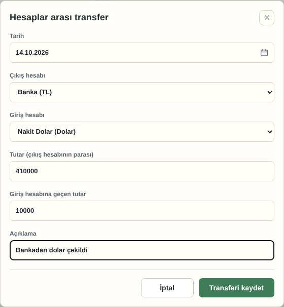
Banka, dükkânınızın kendi hesabıdır. Bankadan para veya döviz çekmek bir alım satım değil, kendi cebinizden kendi cebinize aktarmadır: kimse kimseye borçlanmaz, cari oluşmaz, kâr oluşmaz. Raporlardaki Döviz alış / satış tablosunda bu dövizler müşteriden alınanlardan ayrı olarak Transferle giren sütununda görünür.
Kasa hareketlerini süzmek
Hareketler tablosunun üstündeki sekmelerle yalnızca ALTIN / GÜMÜŞ, DÖVİZ AL / SAT, TRANSFER / BOZDURMA veya GELİR / GİDER hareketlerini görebilirsiniz. Döviz işlemleri Kaynak sütununda “Döviz” olarak görünür.
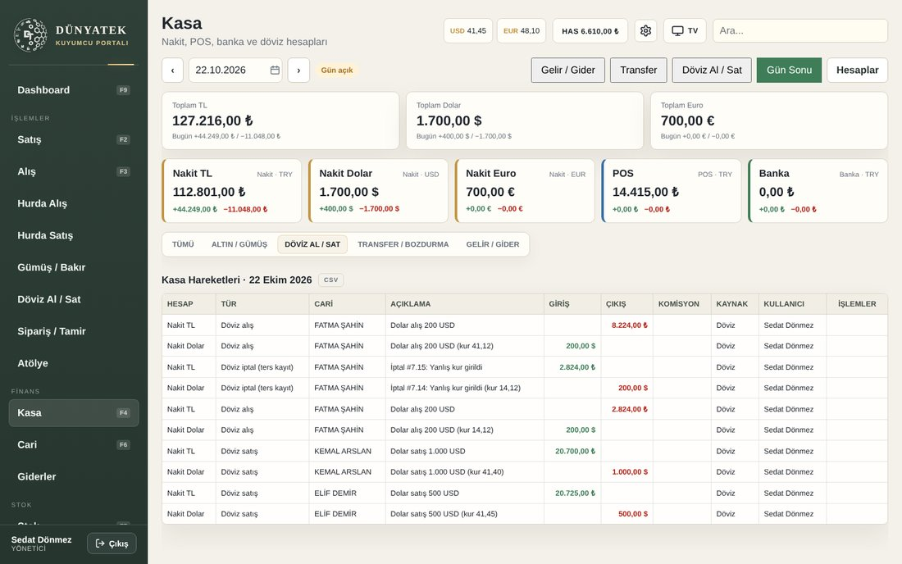
Döviz alış ve satış
Döviz alıp satmak için menüdeki Döviz Al / Sat ekranını açın (Kasa ekranındaki ve Dashboard’daki Döviz al / sat düğmeleri de buraya gelir). Ayrı bir döviz kasası yoktur: dolar Nakit Dolar, euro Nakit Euro hesabına girer ve çıkar; TL karşılığı seçtiğiniz TL hesabına yazılır.
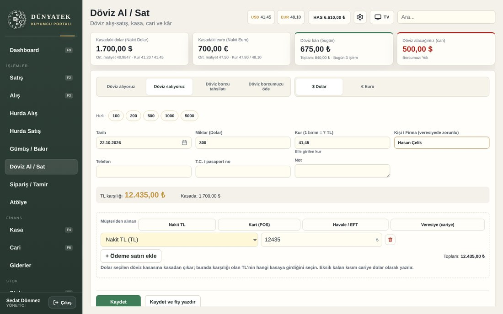
- İşlemi seçin: Döviz alıyoruz (müşteri döviz getiriyor) veya Döviz satıyoruz (müşteriye döviz veriyoruz). Ardından $ Dolar veya € Euro’yu seçin.
- Miktar’ı yazın veya Hızlı düğmelerinden birine (100, 200, 500…) tıklayın.
- Kur günün kurundan gelir: alışta alış, satışta satış kuru. Kutunun altında kurun nereden geldiği yazar (canlı kur veya elle girilen kur). Pazarlık edilen kuru elle yazabilirsiniz; elle yazdığınız kur değişmez. Canlı kur alınamazsa “kuru elle yazın” uyarısı çıkar.
- TL karşılığı miktar × kur olarak kendiliğinden hesaplanır.
- Ödemeyi seçin. Varsayılan, tutarın tamamının Nakit TL ile ödenmesidir. Kart (POS) veya Havale / EFT düğmesiyle hesabı değiştirin; + Ödeme satırı ekle ile tutarı birden çok hesaba bölün.
- Müşteri parasının bir kısmını sonra ödeyecekse ödeme satırına yalnızca ödenen TL’yi yazın; tamamı sonra ödenecekse Veresiye (cariye)’ye tıklayın. Bu durumda Kişi / Firma zorunludur. İsterseniz telefon, T.C. / pasaport no ve not da yazın.
- Kaydet veya Kaydet ve fiş yazdır’a basın. Program kaydetmeden önce işlemin özetini (miktar, kur, TL, hangi kasaya ne yazılacağı, cariye kalan) gösterir; onaylayınca kayıt yapılır.
| İşlem | Döviz kasası | TL kasası | Ödenmeyen kısım |
|---|---|---|---|
| Döviz alış | Artar (Nakit Dolar / Euro) | Azalır (seçilen TL hesabı) | Müşteriye döviz borcumuz olarak cariye yazılır |
| Döviz satış | Azalır | Artar (Nakit, POS veya Banka) | Müşterinin döviz borcu olarak cariye yazılır |
Satışta istenen miktar Nakit Dolar / Nakit Euro bakiyesinden fazlaysa kayıt yapılmaz ve “kasada yeterli döviz yok” uyarısı çıkar. Formun altındaki Kasada bilgisi elinizdeki dövizi gösterir.
Cariye kalan tutar döviz olarak tutulur: 500 $ borçlu olan müşteri, kur ne olursa olsun 500 $ borçludur. İşlemdeki kur kayıtta saklanır; sonradan kur değişse de geçmiş işlemin TL tutarı ve kârı değişmez.
Aynı forma iki kez basılması (çift tıklama, bağlantı tekrarı) tek kayıt oluşturur.
Döviz tahsilat ve ödeme
Müşterinin döviz borcunu tahsil etmek için Döviz borcu tahsilatı, sizin müşteriye olan döviz borcunuzu ödemek için Döviz borcumuzu öde sekmesini seçin. Para döviz olarak (Nakit Dolar / Euro) veya o günün kuruyla TL olarak alınıp verilebilir. Aynı işlemi Cari ekranında kişinin ⋮ menüsündeki Döviz tahsilat / ödeme ile de açabilirsiniz.
Kayıtlar, fiş ve iptal
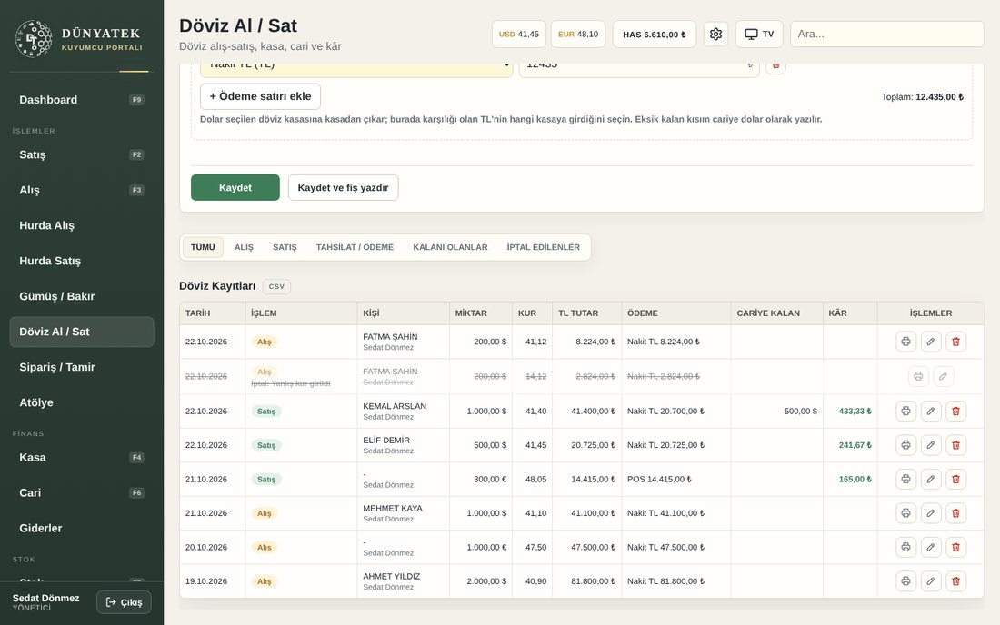
- Sekmeler: TÜMÜ, ALIŞ, SATIŞ, TAHSİLAT / ÖDEME, KALANI OLANLAR, İPTAL EDİLENLER. CSV düğmesi listeyi Excel’e alır.
- Yazıcı simgesi işlemin bordrosunu (döviz alış / satış bordrosu) fiş yazıcısından basar. Bu fiş bilgi amaçlıdır.
- Kalem simgesiyle yalnızca telefon, T.C. / pasaport no ve not düzeltilir. Miktar, kur ve ödeme değiştirilemez; yanlış girilen işlem iptal edilip yeniden girilir.
- İptal: kırmızı simgeye basın, gerekçeyi yazın ve İptal et’e basın. Kasaya işlenen her hareketin tersi bugünün tarihiyle yazılır, cari bakiye ve kâr bu işlemi artık saymaz. Kayıt silinmez; listede üstü çizili, gerekçesi, iptal eden ve zamanıyla kalır. “Formu bu bilgilerle doldur” işaretliyse form aynı bilgilerle açılır; düzeltip yeniden kaydedin.
- Bir döviz alışının iptali kasadaki dövizi eksiye düşürecekse (o döviz satılmışsa) iptal yapılmaz; önce sonraki satışı iptal edin.
Kâr nasıl hesaplanır? (hareketli ağırlıklı ortalama maliyet)
Döviz kârı, satış kuru ile günün alış kuru arasındaki farktan değil, elinizdeki dövizin gerçek alış maliyetinden hesaplanır. Her döviz alışında kasadaki dövizin ortalama maliyeti yeniden hesaplanır; satışta kâr, satılan miktar × (satış kuru − o anki ortalama maliyet) olur.
2.000 $’ı 40,90’dan, sonra 1.000 $’ı 41,10’dan aldınız. Ortalama maliyet (2.000 × 40,90 + 1.000 × 41,10) ÷ 3.000 = 40,9667 TL olur. 500 $’ı 41,45’ten sattığınızda kâr 500 × (41,45 − 40,9667) = 241,67 TL’dir. Satış ortalamayı değiştirmez; kalan 2.500 $’ın maliyeti yine 40,9667’dir.
- Kurla girilen her döviz girişi ortalamaya katılır: döviz alışı ve satış / alış ekranlarında dövizle alınan ödemeler. Kasada kurla yapılan bozdurmada giren döviz ortalamaya katılır; kasadan çıkan her döviz ortalama maliyetle düşer. Aynı para birimindeki iki hesap arasında yapılan transfer ortalamayı değiştirmez.
- Kursuz girilen açılış / devir bakiyesi ortalamaya katılmaz. İlk kullanımda dövizinizi doğru maliyetle görmek için devri döviz alışı olarak girebilirsiniz.
- İptal edilen işlemler ortalamaya ve kâra hiç katılmaz.
- Ekranın üstünde kasadaki döviz, ortalama maliyet ve günün alış / satış kuru; Döviz kârı kutusunda bugünkü ve toplam gerçekleşen kâr görünür.
Gün sonu
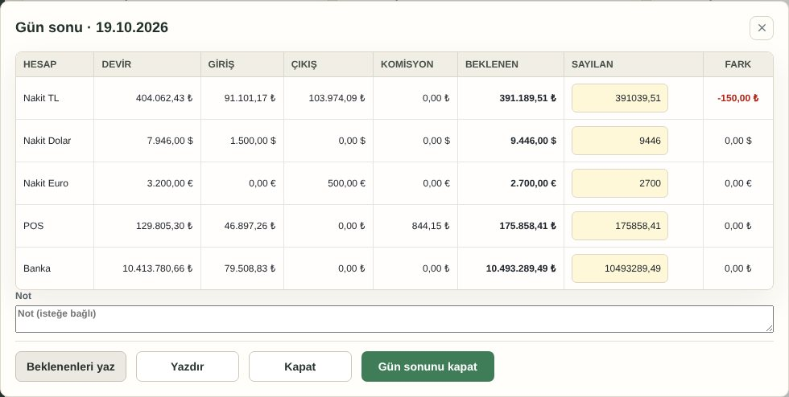
- Kasa ekranında Gün Sonu’na (veya Dashboard’daki Gün sonu düğmesine) tıklayın.
- Her hesap için Devir, Giriş, Çıkış, Komisyon ve Beklenen bakiye görünür. Kasadaki parayı sayıp Sayılan sütununa yazın. Beklenenleri yaz düğmesi tüm satırlara beklenen tutarı doldurur; sonra yalnızca farklı olanları düzeltin.
- Fark sütunu eksikleri kırmızı, fazlaları yeşil gösterir. Gerekirse bir not yazın.
- Yazdır ile gün sonu raporunu fiş yazıcısından alın, Gün sonunu kapat ile kaydedin.
O gün döviz işlemi yapıldıysa pencerede ve basılan raporda her döviz için alınan / satılan miktar, TL tutarları, gerçekleşen kâr ve iptal sayısı ayrıca gösterilir.
Kapatılmış bir güne sonradan hareket girilirse gün sonu penceresinde o hesabın yanında “kapanıştan sonra değişti” uyarısı çıkar; sayımı yeniden girip Sayımı güncelle’ye basabilirsiniz.
Kasa hesapları (yönetici)
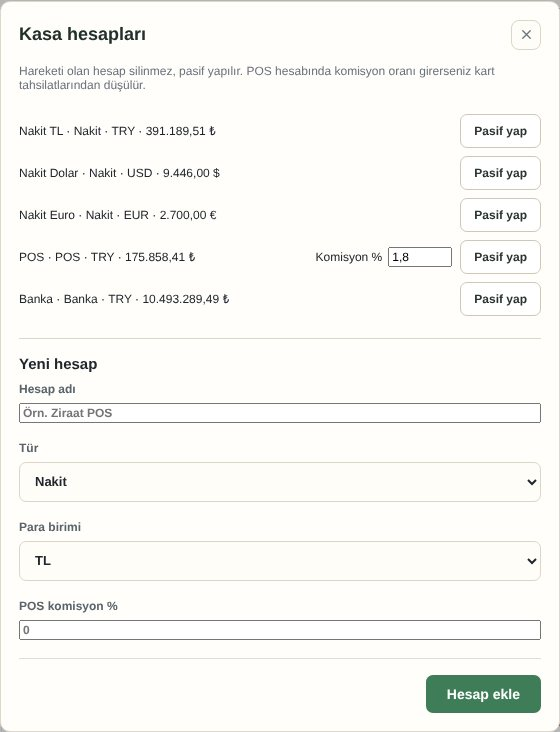
Yönetici, Hesaplar düğmesiyle yeni hesap ekler (ör. ikinci bir banka POS’u veya Sterlin kasası) ve kullanılmayan hesabı Pasif yap ile gizler. Sonradan eklediğiniz bir hesabı hiç kullanmadıysanız (deneme için açtığınız gibi) satırındaki Sil düğmesiyle tamamen silebilirsiniz. Hareketi olan hesap ve programla gelen beş hesap silinmez, pasif yapılır; böylece eski kayıtlar bozulmaz. POS hesabına komisyon oranı girerseniz kartla yapılan tahsilatlardan komisyon düşülür ve ayrıca gösterilir.
Bölüm 11
Cari hesaplar ve cari kartı
Cari ekranı (F6) müşteri, toptancı ve atölyelerle olan has bakiyenizi gösterir.
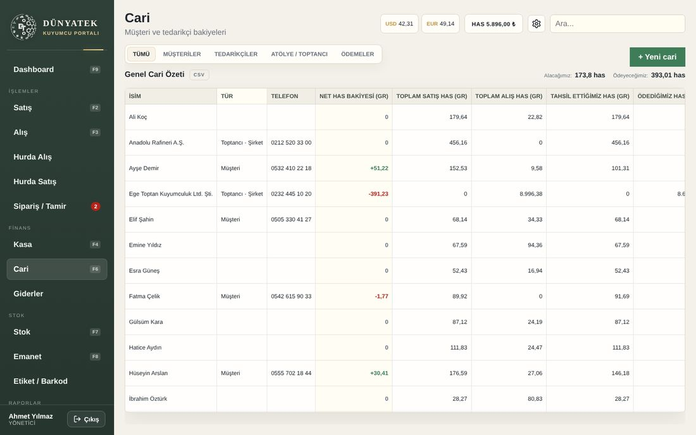
- Net Has Bakiyesi: artı (yeşil) değer karşı taraftan alacağınız, eksi (kırmızı) değer karşı tarafa ödeyeceğiniz has gramıdır. 0, hesabın kapalı olduğunu gösterir.
- Net bakiye = satış has − alış has − tahsilat + ödeme.
- Sekmeler: TÜMÜ, MÜŞTERİLER, TEDARİKÇİLER, ATÖLYE / TOPTANCI, ÖDEMELER. Tablonun üstünde toplam Alacağımız ve Ödeyeceğimiz has görünür.
- Satırdaki düğmeler: göz simgesi cari detayı, kart simgesi cari kartı, ⋮ ise işlem menüsünü açar.
Cari detayı
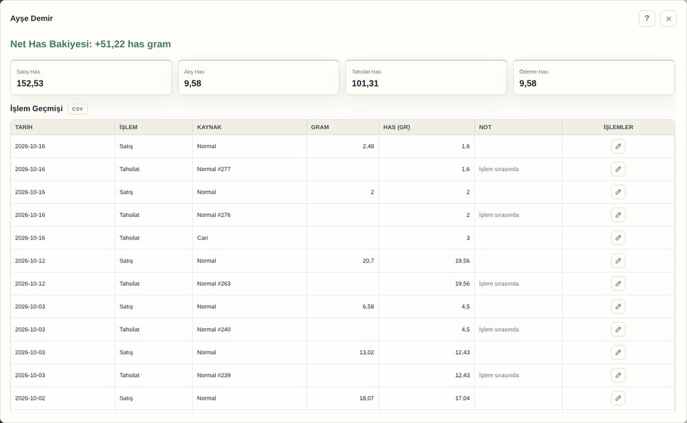
Detay penceresi carinin tüm satış, alış, hurda, tahsilat ve ödemelerini tarih sırasıyla listeler. ? düğmesi bakiyenin nasıl hesaplandığını açıklar; satırdaki kalem simgesi asıl kaydı açar.
Tahsilat ve ödeme girme
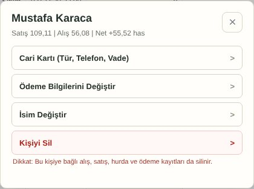
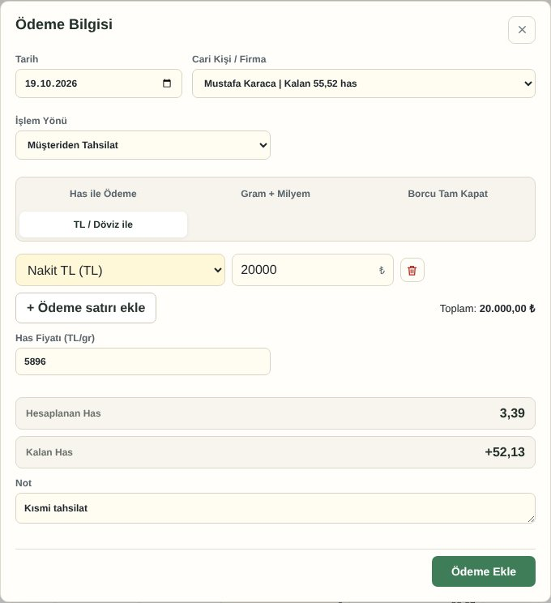
- Carinin satırındaki ⋮ düğmesine tıklayın ve Ödeme Bilgilerini Değiştir’i seçin.
- İşlem Yönü: müşteriden para veya altın alıyorsanız Müşteriden Tahsilat, toptancıya veya atölyeye veriyorsanız Tedarikçiye Ödeme.
- Ödeme şeklini seçin: Has ile Ödeme, Gram + Milyem, Borcu Tam Kapat veya TL / Döviz ile. TL / döviz ile ödemede para kasaya yazılır ve girilen has fiyatıyla has’a çevrilir.
- Hesaplanan Has ve işlemden sonraki Kalan Has görünür. Ödeme Ekle’ye basın.
Girilen ödemeler ÖDEMELER sekmesinde listelenir; buradan düzenlenir, silinir veya tahsilat / ödeme makbuzu yazdırılır.
Kartı açılmış, henüz işlemi olmayan bir atölyeye de has ödemesi yapabilirsiniz (ör. “Gram + Milyem” ile 40 gr 916). Atölyedeki altın o atölyenin cari bakiyesinde görünür.
Cari kartı: telefon, vergi bilgisi, vade ve has limiti
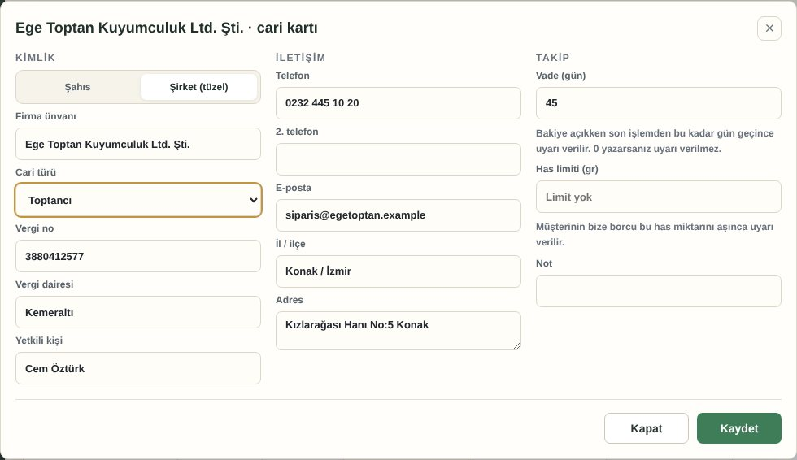
Yeni cari için Cari ekranındaki + Yeni cari’ye, mevcut cari için satırdaki kart simgesine tıklayın.
- Kimlik: Şahıs veya Şirket (tüzel); ad soyad veya firma ünvanı; cari türü (Müşteri, Toptancı, Atölye, Diğer); TC kimlik no veya vergi no, vergi dairesi; şirketlerde yetkili kişi.
- İletişim: telefon, 2. telefon, e-posta, il / ilçe, adres.
- Takip: Vade (gün) — bakiye açıkken son işlemden bu kadar gün geçince Dashboard’da uyarı verilir; boş bırakılırsa genel ayar (başlangıçta 30 gün) geçerlidir,
0yazılırsa uyarı verilmez. Has limiti (gr) — müşterinin borcu bu miktarı aşınca uyarı verilir.
Genel vade süresini yönetici, Dashboard’daki Uyarılar bölümünün VADE AYARI düğmesinden değiştirir. Cari adını kartta düzeltirseniz carinin tüm kayıtları yeni isme taşınır.
Benzer isim uyarısı (mükerrer cari önleme)
Aynı kişi için iki ayrı cari açılmaması için program isimleri karşılaştırır. Büyük/küçük harf ve boşluk farkı aynı cari sayılır. “Mustafa Karca” gibi tek harf hatalı veya yalnızca “Mustafa” gibi eksik bir isim yazdığınızda:
- Cari kartında isim alanının altında “Benzer kayıtlı cari: …” uyarısı görünür.
- Satış, alış, hurda veya emanet kaydederken Benzer cari bulundu penceresi açılır: kayıtlı cariyi seçin ya da gerçekten yeni biriyse Yeni cari olarak kaydet’e basın.
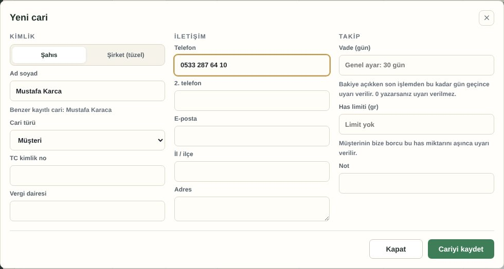
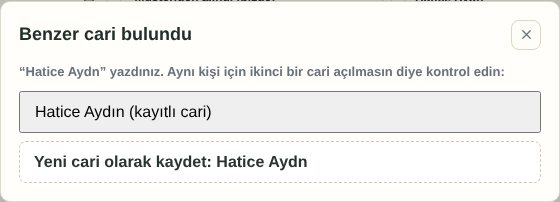
⋮ menüsündeki Kişiyi Sil, o kişiye bağlı alış, satış, hurda ve ödeme kayıtlarını da siler. Emin değilseniz kullanmayın. Kişinin iptal edilmemiş döviz işlemi varsa silinmez; önce döviz işlemlerini iptal edin.
Döviz bakiyesi
Döviz alış / satışında ödenmeyen kısım ve döviz tahsilat / ödemeleri carinin has bakiyesinden ayrı, döviz cinsinden tutulur (Bölüm 10).
- Cari listesindeki Döviz bakiye sütunu kişinin döviz bakiyesini para birimiyle gösterir: +500,00 $ kişi size 500 $ borçlu, −200,00 € sizin kişiye 200 € borcunuz var demektir. Kur değişse de bu miktar değişmez.
- Cari detayının altındaki Döviz hesabı bölümü kişinin döviz işlemlerini (tarih, işlem, miktar, kur, TL, cariye kalan) listeler.
- ⋮ menüsündeki Döviz tahsilat / ödeme borcu kapatmak için Döviz Al / Sat ekranını o kişi seçili açar. Tahsilat dövizle (Nakit Dolar / Euro) veya o günün kuruyla TL olarak alınabilir.
- Döviz işlemi iptal edilirse cari bakiyesi de kendiliğinden düzelir.
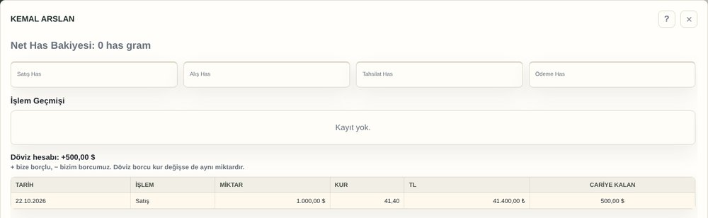
Bölüm 12
Giderler
Giderler ekranı dükkânın kira, maaş, yemek gibi giderlerini tutar ve net kârınızı hesaplar. Gideri ödediğiniz TL tutarıyla girersiniz; program has karşılığını kendisi hesaplar.
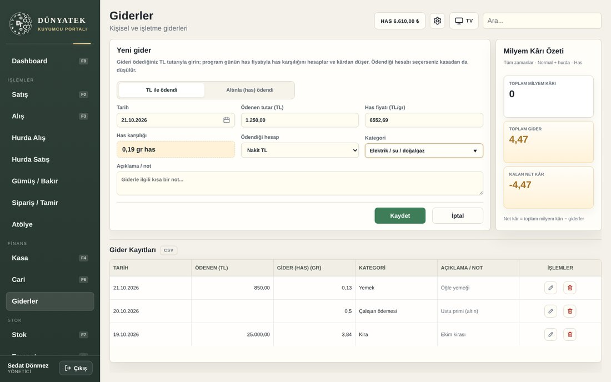
- Üstte TL ile ödendi seçili olsun. Tarih’i kontrol edin, Ödenen tutar (TL) alanına ödediğiniz parayı yazın (ör.
850). - Has fiyatı günün has alış fiyatıyla dolu gelir; gerekirse değiştirin. Has karşılığı kutusu, yazdıkça giderin kaç gram has ettiğini gösterir (850 ÷ 6.552,69 = 0,13 gr).
- Ödendiği hesap’ı seçin (yeni girişte Nakit TL seçili gelir). Para kasadan çıkmadıysa Kasaya yazma’yı seçin.
- Kategori alanına yazın veya önerilerden seçin (Yemek, Kira, Elektrik / su / doğalgaz, Çalışan ödemesi, Araç / yakıt…), isterseniz not yazıp Kaydet’e basın.
Gideri altınla ödediyseniz (ör. ustaya prim olarak has verdiyseniz) Altınla (has) ödendi sekmesini seçip Gider (has, gr) alanına gramı yazın; bu kayıt kasaya yazılmaz.
Tabloda Ödenen (TL) ve Gider (has) sütunları birlikte görünür. Sağdaki Milyem Kârı Özeti tüm zamanların toplamını gösterir. Giderler stoğu değiştirmez.
Ödendiği hesabı seçtiğiniz gider, Kasa ekranında Gider kaynağıyla bir çıkış olarak görünür; ayrıca Gelir / Gider ile girmeyin. Gideri düzenlediğinizde kasa hareketi de güncellenir, sildiğinizde kasadan da silinir. Eski (has ile girilmiş) giderler olduğu gibi kalır.
Bölüm 13
Stok
Stok ekranı (F7) her cins ve ayar için alınan, satılan ve kalan gram ile has miktarını gösterir.
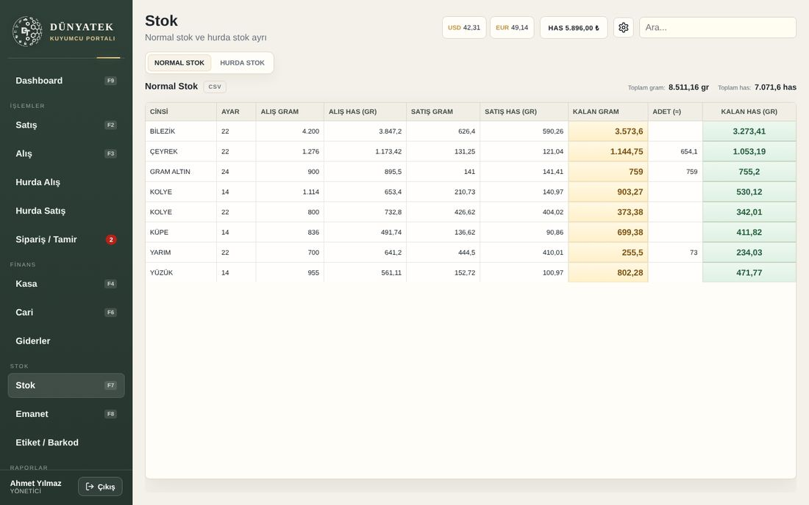
- NORMAL STOK ve HURDA STOK sekmeleri ayrı listelenir.
- Kalan Gram ve Kalan Has sütunları vurgulanır; tablonun üstünde toplam gram ve toplam has görünür.
- Sarrafiyede Adet (≈) sütunu kalan gramdan hesaplanan yaklaşık adettir.
- Kalan hası, malın alış milyemi üzerinden hesaplanır. Tamamı satılan satırlar listede gösterilmez; geçmiş kayıtlar silinmez.
- Stok kontrolü gramla yapılır: stokta olandan fazla gram satılamaz.
- DÖVİZ sekmesi kasadaki dolar ve euroyu, ortalama alış maliyetini, maliyet değerini ve güncel alış kuruyla değerini gösterir. Döviz stoğu Nakit Dolar / Nakit Euro kasa hesaplarından gelir; ayrıca stok girişi yapılmaz.
Stok tablosunu CSV düğmesiyle Excel’e alıp sayım yapabilirsiniz. TL değeriyle birlikte stok raporu için Raporlar ekranındaki “Stok değeri” tablosunu kullanın.
Bölüm 14
Emanet
Emanet ekranı (F8) müşterinin size bıraktığı veya sizin başkasına bıraktığınız altın ve parayı takip eder. Emanetler stoğu, cariyi ve kasayı etkilemez.
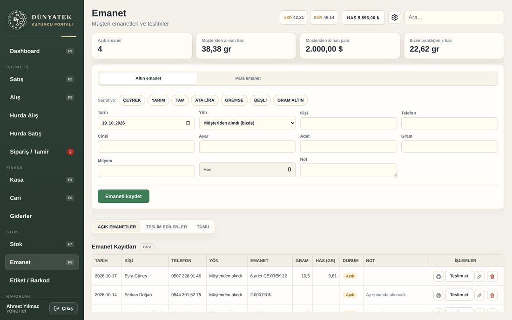
- Formun üstünden Altın emanet veya Para emanet’i seçin.
- Yön: Müşteriden alındı (bizde) veya Bizden verildi (karşıda).
- Kişi ve Telefon’u yazın.
- Altında sarrafiye düğmeleri veya cinsi, ayar, adet, gram ve milyem girilir; has kendiliğinden hesaplanır. Parada tutar ve para birimi (TL, Dolar, Euro, Sterlin) girilir.
- Emaneti kaydet’e basın. Tablodaki yazıcı simgesiyle müşteriye emanet makbuzu verin.
Emanet sahibine geri verildiğinde satırdaki Teslim et’e tıklayın; kayıt TESLİM EDİLENLER sekmesine geçer. Yanlışlıkla kapattıysanız Geri aç ile yeniden açabilirsiniz. Üstteki kutular açık emanet sayısını, müşteriden alınan has ve parayı ve sizin bıraktığınız hası gösterir.
Bölüm 15
Etiket ve barkod yazdırma
Her parçaya barkodlu bir etiket verin; satışta barkodu okutarak ürünü saniyeler içinde forma getirin.
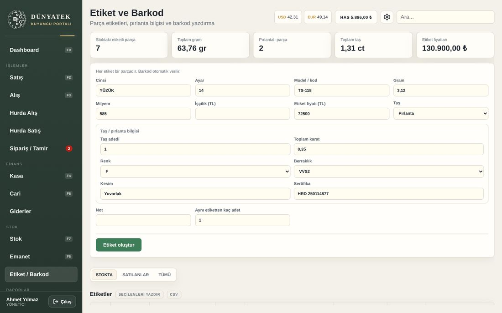
Etiket oluşturma
- Menüden Etiket / Barkod’u açın.
- Cinsi, Ayar, Model / kod, Gram, Milyem ve isterseniz İşçilik (TL) ile Etiket fiyatı (TL)’nı girin. Etiket fiyatı boşsa etikette işçilik yazar.
- Taşlı ürünlerde Taş alanından Pırlanta, Renkli taş, Zirkon, İnci veya Diğer’i seçin; taş adedi, toplam karat, renk, berraklık, kesim ve sertifika numarasını girin.
- Aynı üründen birden fazla parça varsa Aynı etiketten kaç adet’i yazın.
- Etiket oluştur’a basın. Barkod otomatik verilir (ör.
DT000123). “Şimdi yazdırılsın mı” sorusuna Yazdır ile devam edebilirsiniz.
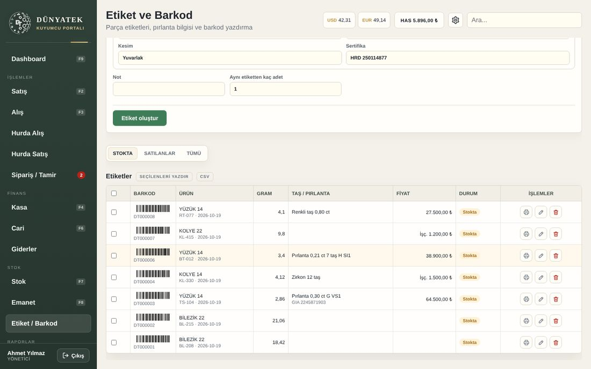
Etiket yazdırma
Tek etiket için satırdaki yazıcı simgesine; birden çok etiket için satırları işaretleyip SEÇİLENLERİ YAZDIR’a tıklayın. Açılan pencerede etiket türünü seçin; ilk etiketin önizlemesi görünür. Seçtiğiniz tür bir sonraki sefer için hatırlanır.
| Etiket türü | Ölçü | Kullanım |
|---|---|---|
| Kelebek etiket | 72 × 12 mm | Yüzük, bilezik gibi parçalara takılan kuyumcu etiketi |
| Geniş etiket | 50 × 25 mm | Kutu veya poşet etiketi; üstte firma adı |
| A4 sayfa | 3 × 8 = 24 etiket | Normal yazıcıda A4 etiket kâğıdı |
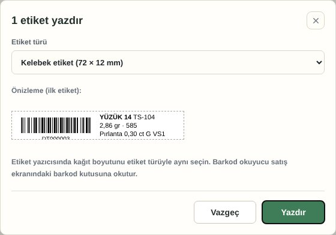
Etiket yazıcısının kâğıt boyutunu yazdırma penceresinde seçtiğiniz etiket türüyle aynı yapın. Barkod okuyucu, Satış ekranındaki barkod kutusuna okutur (Bölüm 4).
Etiketler STOKTA, SATILANLAR ve TÜMÜ sekmelerinde listelenir. Düzenleme ve silme yalnızca stoktaki etiketlerde yapılabilir.
Stok sayımı
Sol menüde Stok Sayımı’na tıklayın, sayım türünü seçip Sayımı başlat’a basın. Ürünleri barkod okuyucuyla tek tek okutun.
- Açılış sayımı: Programa geçerken eldeki ürünler için. Sayımı bitir ve stoğa al deyince sayılan her parça AÇILIŞ STOĞU adına, ödemesi kapalı bir alışla, girdiğiniz maliyet has fiyatından stoğa girer. Cari ve kasa değişmez. Daha önce stoğa girmiş etiketler tekrar girmez.
- Kontrol sayımı: Stoğa dokunmaz. Sayılan gram ve has sistemdeki stokla karşılaştırılır; sayılmayan etiketler listelenir.
Eski programın ya da başka bir firmanın etiketi okutulursa ürün bilgisi (cinsi, ayar, gram, milyem) sorulur. Eski barkod saklanır; satışta bu barkod okutulunca da ürün bulunur. İsterseniz Bizim etiketi de yazdır ile yeni etiket basabilirsiniz. Barkodsuz ürünler için Barkodsuz ürün ekle’yi kullanın. Yanlış okutulan ürünü satırdaki çöp simgesiyle sayımdan çıkarın.
Bölüm 16
Dashboard ve raporlar
Dashboard
Dashboard (F9) dükkânın anlık durumunu tek ekranda gösterir:
- Üst kutular: has altın fiyatı, dolar ve euro kuru, kasadaki nakit TL, bugün kasaya giren/çıkan para, açık emanet sayısı ve bugünkü döviz kârı (işlem sayısı ve kasadaki döviz ile).
- Hızlı işlemler: Yeni satış, Yeni alış, Döviz al / sat, Kasa, Gün sonu, Emanet, Sipariş / tamir.
- Performans: 7 gün, 30 gün, 90 gün, Bu ay veya Bu yıl için ciro, brüt kâr, satılan gram, alış ve gider. Her kutuda önceki aynı uzunluktaki döneme göre yüzde değişim ve küçük bir eğri bulunur. TL / Has düğmeleri birimi değiştirir.
- Günlük seyir grafiği: satış, alış ve kâr çizgileri. Farenizi grafiğin üzerinde gezdirerek günün değerlerini görün; göstergedeki bir seriye tıklayarak o çizgiyi gizleyin. 90 günden uzun aralıklarda grafik haftalık gösterilir.
- En çok satan ürünler, Stok dağılımı, En iyi müşteriler çubuk grafikleri. Tüm rapor bağlantısı aynı dönemi Raporlar ekranında açar.
Uyarılar bölümü teslim günü gelen veya geçen siparişleri, atölyenin söz verdiği günü geçen atölye işlerini, vadesi geçen carileri ve has limitini aşan müşterileri listeler. Bir uyarıya tıklayınca ilgili sipariş ekranı veya cari kartı açılır.
Sayfanın altındaki Genel durum bölümü tüm kayıtlara göre milyem kârını, normal ve hurda stoğu, cari alacak/borç toplamlarını, gider özetini, TL özetini ve stok kontrolünü gösterir.
Raporlar
- Menüden Raporlar’ı açın.
- Aralığı seçin: Bugün, Dün, Bu hafta, Bu ay, Geçen ay, Son 30 gün, Bu yıl veya sağdaki iki tarih kutusuyla Özel bir aralık.
- Üstte satış cirosu, brüt kâr (ve milyem kârı), satılan gram/has, alış ve giderler görünür.
- Aşağıdaki tablolar: Ürün bazında satış, En çok alan müşteriler, Tedarikçilerden alış, Personel satışları, Kasa hareketleri, Giderler, Cari yaşlandırma (0-30 / 31-60 / 61-90 / 90+ gün) ve Stok değeri.
- POS komisyonu kâr sayılmaz: üstteki POS komisyonu kutusu dönemde bankanın kestiği tutarı, Net kâr kutusu brüt kâr (ve döviz kârı) eksi komisyonu gösterir; giderler bu rakama dahil değildir. POS komisyonları tablosu komisyonu gün, hesap ve kaynak (satış, döviz satışı…) bazında, çekilen ve hesaba geçen tutarla listeler.
- Döviz işlemi yapıldıysa üstte Döviz kârı (gerçekleşen) kutusu, aşağıda Döviz alış / satış tablosu (her döviz için alınan / satılan miktar, TL, kâr, iptal sayısı; bankadan çekilen döviz ayrıca Transferle giren, Transfer kuru ve Transferle çıkan sütunlarında) ve Eldeki döviz ve değerleme farkı tablosu çıkar. Değerleme farkı, kasadaki dövizi bugünkü alış kuruyla bozdursanız oluşacak kâr veya zarardır; henüz gerçekleşmediği için kâra eklenmez.
- Her tabloyu CSV ile Excel’e indirin; sayfanın tamamını Yazdır ile kâğıda veya PDF’e alın.
Bölüm 17
Yedekleme ve geri yükleme
Kayıtlarınız tek bir bilgisayarda durduğu için yedekler çok önemlidir. Program yedeği kendisi alır; sizin göreviniz yedek klasörünü düzenli olarak bilgisayar dışına kopyalamaktır.
Yedekler ne zaman alınır?
- Günlük otomatik: her gün programın ilk açılışında.
- Her açılışta (isteğe bağlı): Ayarlar’da Otomatik yedekleme “Her açılışta” seçilirse her girişte ayrıca yedek alınır. Bu tercih bir sonraki açılışta geçerli olur.
- Elle: dişli menüdeki YEDEK AL veya Yedekler penceresindeki Şimdi yedek al.
- Güvenlik yedeği: geri yüklemeden ve verileri sıfırlamadan hemen önce otomatik.
Her yedek, programın içinde saklanmasının yanı sıra C:\DUNYATEK_BACKUP klasörüne .json dosyası olarak da yazılır. Program içindeki yedekler 14 gün tutulur. Klasördeki 90 günden eski dosyalar silinir, ancak en yeni 30 dosyaya hiç dokunulmaz.
Yedekler penceresi
Dişli menüden YEDEKLER VE GERİ YÜKLEME’yi açın.
- Bilgisayardaki yedek klasörü: C:\DUNYATEK_BACKUP ve içindeki dosya sayısı; Şimdi yedek al, Klasörü aç (klasörü Windows Gezgini’nde açar) ve en yeni 30 dosyanın listesi.
- Programdaki yedekler (son 14 gün): her yedeğin tarihi, türü (Günlük otomatik, Elle alınan, Girişte, Geri yükleme öncesi, Sıfırlama öncesi) ve boyutu; İndir ve Geri yükle düğmeleri.
Yedekten geri yükleme (yalnızca yönetici)
- Yönetici hesabıyla girin ve Yedekler penceresini açın.
- Dönmek istediğiniz tarihin yanındaki Geri yükle’ye tıklayın. Başka bir yerdeki (ör. USB bellekteki) yedek için Başka bir yedek dosyasından geri yükle… bağlantısıyla
.jsondosyasını seçin. - “Şu anki veriler önce ayrıca yedeklenecek” onayını Geri yükle ile verin.
Program önce mevcut durumu “Geri yükleme öncesi” adıyla yedekler, sonra seçilen yedeği yükler. Yanlış yedeği seçtiyseniz bu güvenlik yedeğine geri dönebilirsiniz.
Bilgisayar arızalanır, çalınır veya diski bozulursa C:\DUNYATEK_BACKUP klasörü de kaybolur. Bu klasörü en az haftada bir USB belleğe veya bir bulut klasörüne (Google Drive, OneDrive vb.) kopyalayın. Başlat menüsündeki Yedek klasörü kısayolu klasörü doğrudan açar.
Tüm verileri dışa aktarma
Dişli menüdeki TÜM VERİLERİ DIŞA AKTAR tüm kayıtları okunabilir bir JSON dosyası olarak indirir (kuyumcu_disa_aktarim_tarih.json). Dosya hem okunabilir rapor hem de tam yedektir: verileri başka bir bilgisayara taşımak için yeni bilgisayarda Yedekler penceresindeki Başka bir yedek dosyasından geri yükle… ile bu dosyayı seçin. Yeni bilgisayardaki kayıtların yerine dosyadakiler gelir (öncesinde otomatik yedek alınır).
Bölüm 18
Kullanıcılar, roller ve parola
Dükkânda çalışan herkese ayrı bir kullanıcı açın. Böylece kasa hareketlerinde ve personel satışları raporunda işlemi kimin yaptığı görünür.
| Rol | Yapabilecekleri |
|---|---|
| Yönetici | Her şey. Ayrıca: kullanıcı ekleme ve yetki verme, firma ve fiş bilgilerini değiştirme, kasa hesabı ekleme ve komisyon oranı, genel vade ayarı, yedekten geri yükleme, verileri sıfırlama. |
| Personel | Günlük işler: satış, alış, hurda, sipariş, kasa hareketi, gün sonu, cari ödemesi, gider, emanet, etiket ve yedek alma. |
| İzleyici | Yalnızca görüntüler (ör. muhasebeci). Kayıt ekleyemez, değiştiremez; yalnızca kendi parolasını değiştirebilir. |
Kullanıcı ekleme (yönetici)
- Dişli menüden HESAP VE KULLANICILAR’ı açın.
- Pencerenin altındaki forma Ad Soyad, E-posta, Parola (en az 8 karakter) yazın ve Rol’ü seçin.
- Kullanıcı ekle’ye basın. Kişi bu e-posta ve parolayla giriş yapar.
Kullanıcılar listesinde bir kişinin rolünü açılır listeden değiştirebilir, işten ayrılan kişiyi Pasif yap ile girişe kapatabilirsiniz (Aktif yap ile geri açılır). Parolasını unutan kişiye Parola düğmesiyle yeni parola verilir. Yönetici kendi rolünü değiştiremez ve kendini pasif yapamaz.
Parola değiştirme
Her kullanıcı aynı pencerenin üstündeki Mevcut parola ve Yeni parola alanlarını doldurup Parolayı değiştir’e basarak kendi parolasını değiştirir.
Bölüm 19
Verileri sıfırlama
Programı denemek için girdiğiniz örnek kayıtları silip gerçek kullanıma temiz başlamak isterseniz verileri sıfırlayabilirsiniz. Bu işlemi yalnızca yönetici yapabilir.
- Dişli menüden AYARLAR’ı açın ve alttaki kırmızı Verileri sıfırla düğmesine tıklayın.
- Yönetici parolası alanına kendi parolanızı yazın.
- Onay kutusuna büyük harflerle
SIFIRLAyazın; düğme ancak bundan sonra etkinleşir. - Verileri sıfırla’ya basın.
| Silinenler | Korunanlar |
|---|---|
| Satış, alış, hurda, gümüş ve bakır, cari ödemeleri ve cari kartları, giderler, kasa hareketleri, gün sonu, emanet, sipariş, atölye ve etiket kayıtları | Kullanıcılar, ayarlar, firma bilgileri, kasa hesap tanımları, yedekler ve işlem günlüğü |
Silmeden hemen önce otomatik olarak “Sıfırlama öncesi” yedeği alınır. Yanlışlıkla sıfırladıysanız Yedekler penceresinden bu yedeği geri yükleyin (Bölüm 17).
Bölüm 20
Sık sorulan sorular ve sorun giderme
Simgeye tıkladım, program açılmadı.
Birkaç saniye bekleyip masaüstündeki Dunyatek_Kuyumcu_Portal simgesine tekrar tıklayın. Program zaten çalışıyorsa yalnızca pencere yeniden açılır; çalışmıyorsa yeniden başlatılır. Sorun sürerse bilgisayarı yeniden başlatın. Yine açılmazsa destek hattını arayın; destek ekibi C:\Dunyatek_Kuyumcu_Portal\Veri\sunucu.log dosyasını isteyebilir.
Pencereyi kapattım; kayıtlarım kayboldu mu?
Hayır. Her kayıt Kaydet’e bastığınız anda bilgisayara yazılır. Pencereyi kapatmak kayıtları etkilemez; simgeye tıklayınca kaldığınız yerden devam edersiniz.
Başka bir bilgisayardan veya telefondan programa girebilir miyim?
Hayır. Kurulumlu sürüm güvenlik için yalnızca kurulduğu bilgisayardan açılır (http://localhost:47800). Programı aynı bilgisayarda birden fazla kişi kendi kullanıcı adıyla kullanabilir.
İnternet kesildi; çalışmaya devam edebilir miyim?
Evet. Program internetsiz çalışır. Yalnızca canlı has fiyatı ve kurlar gelmez; üst çubuktaki HAS düğmesinden fiyatı elle girin (Bölüm 3).
“Stok yetersiz” uyarısı alıyorum.
Satmak istediğiniz cins ve ayarda yeterli gram yok. Önce Stok ekranında kalan gramı kontrol edin; mal stoğa girilmemişse önce Alış kaydını yapın. Barkodla satışta “önce alışını girin” uyarısı da aynı anlama gelir.
Yanlış bir kaydı düzeltmek istiyorum.
İlgili ekranın tablosunda kaydın satırındaki kalem simgesine tıklayın, düzeltip Güncelle’ye basın. Kayda bağlı kasa ödemesi de birlikte güncellenir.
Bir müşteri iki ayrı cari olarak açılmış.
Birini Cari ekranında kart simgesiyle açın ve adını diğer carinin adıyla aynı yapın. Program “tüm kayıtları birleştirsin mi” diye sorar; Birleştir derseniz iki carinin kayıtları tek isimde toplanır.
Bilgisayarım bozuldu; yedekten nasıl dönerim?
- Yeni bilgisayara programı kurun (Bölüm 1) ve bir yönetici hesabı oluşturun.
- USB bellekteki veya buluttaki yedek dosyalarınızı (
.json) bu bilgisayara kopyalayın. - Dişli menü → YEDEKLER VE GERİ YÜKLEME → Başka bir yedek dosyasından geri yükle… ile en yeni yedek dosyasını seçin ve onaylayın.
İsterseniz bu işlemi Dünyatek Bilişim destek ekibiyle birlikte yapabilirsiniz.
Programı yeni sürüme güncelledim; kayıtlarım duruyor mu?
Evet. Yeni sürüm eskisinin üzerine kurulur; Veri ve C:\DUNYATEK_BACKUP klasörlerine dokunulmaz. Güncelleme veritabanında değişiklik gerektiriyorsa program ilk açılışta, değişiklikten önce veritabanının bir kopyasını C:\DUNYATEK_BACKUP klasörüne guncelleme_oncesi_…sqlite adıyla alır. Kullandığınız sürümü Ayarlar penceresinin altında görebilirsiniz.
“… eksiye düşecek. Yine de kaydedilsin mi?” sorusu çıkıyor.
Bu kayıt Nakit TL, Banka veya POS hesabından elinizdekinden fazla para çıkarıyor. Hesapta para olduğu hâlde soru çıkıyorsa o hesaba giren bir tutar (açılış bakiyesi, tahsilat, transfer) girilmemiş olabilir; önce onu girin. Kredili banka hesabı kullanıyorsanız Evet, kaydet diyerek devam edebilirsiniz. Vazgeç derseniz kayıt yapılmaz.
Bankadan dolar çektim; banka cari mi oldu?
Hayır. Banka dükkânın kendi hesabıdır. Bankadan döviz çekmeyi Kasa ekranında Transfer ile girin (Banka → Nakit Dolar, çıkan TL ve gelen dolar). Cari oluşmaz; program kuru dövizin maliyeti olarak saklar ve raporda Transferle giren sütununda gösterir.
Kasada geçmiş bir güne gittim ama kartlardaki bakiye değişmedi.
Kartlardaki büyük rakam her zaman güncel bakiyedir; seçilen güne göre yalnızca o günün giriş, çıkış ve hareketleri değişir. O günün akşamındaki bakiyeyi görmek için o günde Gün Sonu penceresindeki Beklenen sütununa bakın.
Döviz işlemini yanlış girdim.
Döviz Al / Sat ekranındaki listede işlemin satırındaki kırmızı simgeyle işlemi iptal edin ve gerekçeyi yazın. Kasa ters kayıtla geri alınır, cari ve kâr düzelir; kayıt silinmez, “iptal edildi” olarak kalır. Form aynı bilgilerle açılır; doğrusunu girip kaydedin (Bölüm 10).
“Kasada yeterli döviz yok” uyarısı alıyorum.
Satmak istediğiniz döviz Nakit Dolar / Nakit Euro hesabında yok. Kasa ekranında hesabın bakiyesine bakın. Dövizi kasaya önceden girmediyseniz Gelir / Gider ile Devir / açılış bakiyesi olarak veya döviz alışı olarak girin.
Gümüş fiyatı gelmiyor veya yanlış görünüyor.
Gümüş / Bakır ekranındaki Fiyat gir ile günün fiyatını elle yazın; elle girilen fiyat canlı fiyattan önce gelir. Canlı fiyata dönmek için kutuları boşaltıp kaydedin. Bakırın canlı fiyatı yoktur, her zaman elle girilir.
Atölyeye verdiğim altın stokta hâlâ görünüyor.
Bu bilerek böyledir: Atölye ekranı işi ve has miktarını takip eder, stoktan düşmez. Atölyeyle hesabınızı Cari ekranında has ödemesi girerek tutun (Bölüm 11). Atölyedeki toplam has, Atölye ekranının üstündeki Atölyedeki altın kutusunda görünür.
Fiş veya etiket yazıcıdan düzgün çıkmıyor.
Yazdırma penceresinde doğru yazıcıyı seçin ve kâğıt boyutunu fişte 80 mm’ye, etikette seçtiğiniz etiket türüne (72 × 12 mm, 50 × 25 mm veya A4) ayarlayın. Kenar boşluğunu “Yok” veya “En az” yapın.
Parolamı unuttum.
Personel ve izleyici kullanıcıların parolası unutulduğunda yönetici, Kullanıcılar listesinde o kişinin satırındaki Parola düğmesine basıp yeni bir parola belirler; kişi bu parolayla giriş yapar.
Yönetici parolası unutulduysa:
- Giriş ekranında Parolamı unuttum’a tıklayın. Ekranda makine kodu ve istek kodu görünür.
- Dünyatek Bilişim destek hattını arayıp bu iki kodu okuyun. İşyeri sahibi olduğunuz doğrulandıktan sonra size
DP1-ile başlayan bir sıfırlama kodu verilir. - Kodu Sıfırlama kodu kutusuna yapıştırın, yönetici e-postanızı ve yeni parolanızı (iki kez) yazıp Parolayı yenile’ye basın. Ardından yeni parolayla giriş yapın.
Sıfırlama kodu yalnızca o bilgisayarda ve bir kez çalışır; kullanıldıktan sonra ekranda yeni bir istek kodu çıkar. İstek kodu 24 saat sonra kendiliğinden yenilenir.
Bölüm 21
Teknik destek ve iletişim
Teknik destek ve iletişim
DÜNYATEK BİLİŞİM
Dünyatek Bilişim, Dünyatek Kuyumcu Portalı için kurulum, eğitim, yedekten geri dönme ve sürüm güncellemesi konularında destek verir. Sorularınız ve talepleriniz için aşağıdaki kanallardan bize ulaşabilirsiniz.
- TELEFON
- 0342 361 01 18
- MOBİL
- 0535 926 49 50
- E-POSTA
- info@dunyatek.com
- WEB
- www.dunyatek.com
- ADRES
- Çamtepe Mah. Mahmut Tevfik Atay Blv. Gaziantep Teknopark A Blok Kat:1 No:114, 27100 Şahinbey / Gaziantep
© 2026 Dünyatek Bilişim tarafından geliştirilmiştir.
- Program sürümü (Ayarlar penceresinin altında yazar)
- Sorunun hangi ekranda ve hangi adımda olduğu, ekranda çıkan uyarı mesajı
- Mümkünse ekranın fotoğrafı veya ekran görüntüsü
Dünyatek Kuyumcu Portalı · Kullanım Kılavuzu · Sürüm 1.1 · Ekim 2026